СП 17.13330.2017 «Кровли»
О документе: разработчики, утверждение, регистрация, ключевые слова
СВОД ПРАВИЛ
СП 17.13330.2017
Издание официальное
Москва 2017
- 1 ИСПОЛНИТЕЛЬ -Центральный научно -исследовательский и проектно -экспериментальный институт промышленных зданий и сооружений ( АО « ЦНИИПромзданий »)
2 ВНЕСЕН Техническим комитетом по стандартизации ТК 465 « Строительство »
- 3 ПОДГОТОВЛЕН К УТВЕРЖДЕНИЮ Департаментом градостроительной деятельности и архи -тектуры Министерства строительства и жилищно -коммунального хозяйства Российской Федерации ( Минстрой России )
- 4 УТВЕРЖДЕН приказом Министерства строительства и жилищно -коммунального хозяйства Рос -сийской Федерации от 31 мая 2017 г . № 827/ пр и введен в действие с 1 декабря 2017 г .
- 5 ЗАРЕГИСТРИРОВАН Федеральным агентством по техническому регулированию и метрологии ( Росстандарт ). Пересмотр СП 17.13330.2011 « СНиП II-26-76 Кровли »
В случае пересмотра ( замены ) или отмены настоящего стандарта соответствующее уве -домление будет опубликовано в установленном порядке . Соответствующая информация , уведом -ление и тексты размещаются также в информационной системе общего пользования -на офици -альном сайте разработчика ( Минстрой России ) в сети Интернет
© Минстрой России , 2017
Настоящий нормативный документ не может быть полностью или частично воспроизведен , тиражирован и распространен в качестве официального издания на территории Российской Федерации без разрешения Минстроя России
Дата введения - 2017-12-01
УДК 69.024.001.21083.75
ОКС 91.060.20
Ключевые слова : кровля , основание под кровлю , инверсионная кровля , эксплуатируемая кровля , озелененная кровля , рулонный материал , обрешетка , контробрешетка , диффузион -ная пленка , черепица , волнистые листы , листовые материалы , кровельные плитки , пароизо -ляция
Введение
Настоящий свод правил разработан в соответствии с требованиями Федерального закона от 30 декабря 2009 г . № 384ФЗ « Технический регламент о безопасности зданий и сооружений ».
Пересмотр выполнен авторским коллективом АО « ЦНИИПромзданий » ( д -р техн . наук , проф . В . В . Гранев ; канд . техн . наук , проф . С . М . Гликин , канд . техн . наук А . М . Воронин , канд . техн . наук А . В . Пешкова ) . ний
1Область применения
Настоящий свод правил распространяется на проектирование новых , реконструкцию и ка -питальный ремонт кровель из битумосодержащих и полимерных рулонных материалов , из ма -стик , в том числе с армирующими прокладками , хризотилцементных , цементно -волокнистых и битумных волнистых листов , цементно -песчаной , керамической , полимерцементной и битумной , плоской и волнистой черепицы , плоских хризотилцементных , композитных , цементно -волокни -стых и сланцевых плиток , листовой оцинкованной стали , меди , цинк -титана , алюминия , метал -лического листового гофрированного профиля , металлочерепицы , металлической фальцевой черепицы , а также железобетонных лотковых панелей , применяемых в зданиях различного назначения и во всех климатических зонах Российской Федерации .
2Нормативные ссылки
В настоящем своде правил использованы нормативные ссылки на следующие документы : ГОСТ 1173-2006 Фольга , лента , листы и плиты медные . Технические условия
ГОСТ 2678-94 Материалы рулонные кровельные и гидроизоляционные . Методы испыта -
ГОСТ 3640-94 Цинк . Технические условия
ГОСТ 3916.2-96 Фанера общего назначения с наружными слоями из шпона хвойных пород .
Технические условия
ГОСТ 8486-86 Пиломатериалы хвойных пород . Технические условия
ГОСТ 9559-89 Листы свинцовые . Технические условия
ГОСТ 9573-2012 Плиты из минеральной ваты на синтетическом связующем теплоизоля -ционные . Технические условия
ГОСТ 10499-95 Изделия теплоизоляционные из стеклянного штапельного волокна . Техни -ческие условия
ГОСТ 14918-80 Сталь тонколистовая оцинкованная с непрерывных линий . Технические условия
ГОСТ 15588 -2014 Плиты пенополистирольные теплоизоляционные . Технические условия
ГОСТ 18124-2012 Листы хризотилцементные плоские . Технические условия
ГОСТ 21631-76 Листы из алюминия и алюминиевых сплавов . Технические условия
ГОСТ 24045-2010 Профили стальные листовые гнутые с трапециевидными гофрами для строительства . Технические условия
ГОСТ 25820 -2014 Бетоны легкие . Технические условия
ГОСТ 25898 -2012 Материалы и изделия строительные . Методы определения паропрони -цаемости и сопротивлению паропроницанию
ГОСТ 26633-2015 Бетоны тяжелые и мелкозернистые . Технические условия
ГОСТ 26816-86 Плиты цементно -стружечные . Технические условия
ГОСТ 28013-98 Растворы строительные . Общие технические условия
ГОСТ 30340-2012 Листы хризотилцементные волнистые . Технические условия
ГОСТ 30402-96 Материалы строительные . Метод испытания на воспламеняемость
ГОСТ 30444-97 Материалы строительные . Метод испытания на распространение пламени
ГОСТ 30693-2000 Мастики кровельные и гидроизоляционные . Общие технические условия
The roofs
ГОСТ 31015-2002 Смеси асфальтобетонные и асфальтобетон щебеночно -мастичные . Технические условия ГОСТ 31357-2007 Смеси сухие строительные на цементном вяжущем . Общие технические условия ГОСТ 31899-1-2011 (EN 12311-1:1999) Материалы кровельные и гидроизоляционные гиб -кие битумосодержащие . Метод определения деформативно -прочностных свойств ГОСТ 31899-2-2011 (EN 12311-2:1999) Материалы кровельные и гидроизоляционные гиб -кие полимерные ( термопластичные или эластомерные ). Метод определения деформативно -прочностных свойств ГОСТ 32310-2012 (EN 13164:2008) Изделия из экструзионного пенополистирола XPS теп -лоизоляционные промышленного производства , применяемые в строительстве . Технические условия ГОСТ 32314-2012 (EN 13162:2008) Изделия из минеральной ваты теплоизоляционные про -мышленного производства , применяемые в строительстве . Общие технические условия ГОСТ 32317 -2012 (EN 1297:2004) Материалы кровельные и гидроизоляционные гибкие би -тумосодержащие и полимерные ( термопластичные или эластомерные ). Метод испытания на старение под воздействием искусственных климатических факторов : УФ -излучения , повышен -ной температуры и воды ГОСТ 32318-2012 (EN 1931:2000) Материалы кровельные и гидроизоляционные гибкие би -томосодержащие и полимерные ( термопластичные или эластомерные ). Метод определения па -ропроницаемости ГОСТ 32805-2014 Материалы гибкие рулонные кровельные битумосодержащие . Общие технические условия ГОСТ Р 51263-2012 Полистиролбетон . Технические условия ГОСТ Р 56026-2014 Материалы строительные . Метод определения группы пожарной опас -ности кровельных материалов ГОСТ Р 56309-2014 Плиты древесные строительные с ориентированной стружкой (OSB). Технические условия ГОСТ Р 56335-2015 Дороги автомобильные общего пользования . Материалы геосинтети -ческие для дорожного строительства . Метод определения прочности при статическом продав -ливании СП 16.13330.2017 « СНиП II-23-81* Стальные конструкции » СП 20.13330.2016 « СНиП 2.01.07-85* Нагрузки и воздействия » СП 29.13330.2011 « СНиП 2.03.13-88 Полы » СП 30.13330.2016 « СНиП 2.04.01-85* Внутренний водопровод и канализация зданий » СП 32.13330.2012 « СНиП 2.04.03-85 Канализация . Наружные сети и сооружения » ( с изме -нением № 1) СП 50.13330.2012 « СНиП 23-02-2003 Тепловая защита зданий » СП 54.13330.2016 « СНиП 31-01-2003 Здания жилые многоквартирные » СП 56.13330.2011 « СНиП 31-03-2001 Производственные здания » ( с изменением № 1) СП 64.13330.2017 « СНиП II-25-80 Деревянные конструкции » СП 82.13330.2016 « СНиП III-10-75 Благоустройство территорий » СП 118.13330.2012 « СНиП 31-06-2009 Общественные здания и сооружения » ( с изменени -ями № 1, № 2)
СП 131.13330.2012 « СНиП 23-01-99* Строительная климатология » ( с изменением № 2)
Примечание -При пользовании настоящим сводом правил целесообразно проверить действие ссылочных документов в информационной системе общего пользования -на официальном сайте феде -рального органа исполнительной власти в сфере стандартизации в сети Интернет или по ежегодному ин -формационному указателю « Национальные стандарты », который опубликован по состоянию на 1 января текущего года , и по выпускам ежемесячного информационного указателя « Национальные стандарты » за текущий год . Если заменен ссылочный документ , на который дана недатированная ссылка , то рекоменду -ется использовать действующую версию этого документа с учетом всех внесенных в данную версию изме -нений . Если заменен ссылочный документ , на который дана датированная ссылка , то рекомендуется ис -пользовать версию этого документа с указанным выше годом утверждения ( принятия ). Если после утвер -ждения настоящего свода правил в ссылочный документ , на который дана датированная ссылка , внесено изменение , затрагивающее положение , на которое дана ссылка , то это положение рекомендуется приме - нять без учета данного изменения . Если ссылочный документ отменен без замены , то положение , в кото -ром дана ссылка на него , рекомендуется применять в части , не затрагивающей эту ссылку . Сведения о действии сводов правил целесообразно проверить в Федеральном информационном фонде стандартов .
3Термины и определения
- 3.1.1 битумная плоская черепица
- Кровельное изделие в виде плоского листа , изготов -ляемого из полотнищ битумного или битумно -полимерного рулонного материала с фигурными вырезами по одному краю листа .
- 3.1.2 битумная волнистая черепица
- Кровельное изделие , изготовляемое путем про -питки битумным составом волнистого картонного листа и нанесением на его поверхность отде -лочного слоя .
- 3.1.3 водозащитная пленка
- Подкровельный полимерный рулонный материал в стропиль -ной конструкции крыши с двумя вентиляционными каналами ( зазорами ), защищающий тепло -изоляцию и конструкцию от атмосферных осадков , при этом удаление водяного пара происходит за счет конвективного движения воздуха в канале .
- 3.1.4 водоотвод
- Система устройств для отвода воды самотеком с поверхности кровли .
- 3.1.5 водосточная воронка
- Конструктивная деталь , устанавливаемая на поверхности кровли при внутреннем водоотводе или на верхнем конце подвесной водосточной трубы , в т . ч . в водосборном лотке , при наружном водоотводе .
- 3.1.6 диффузионная ветроводозащитная пленка
- Диффузионно -открытый подкровель -ный полимерный рулонный материал для стропильной конструкции крыши с одним вентиляци -онным каналом ( зазором ), защищающий теплоизоляцию и конструкцию от атмосферных осадков и конденсата , ограничивающий конвективное движение воздуха через теплоизоляцию и способ -ствующий выводу пара из теплоизоляции .
- 3.1.7 дополнительный водоизоляционный ковер ( рулонный или мастичный )
- Слои ру -лонных кровельных материалов или мастик , в т . ч . армированных стекломатериалами или про -кладками из полимерных волокон , выполняемые в местах примыканий основного водоизоляци -онного ковра к вертикальным поверхностям выступающих над ковром конструктивных элемен -тов с нахлестом этих слоев на основной водоизоляционный ковер .
- 3.1.8 дренажный слой
- Слой из гранитного щебня , дренажной профилированной мем -браны , дренажного мата и других подобных материалов для отвода воды с кровель .
- 3.1.9 ендова
- Место пересечения сходящихся скатов покрытия , по которому стекает вода . 3.1.10 защитный слой : Элемент кровли , предохраняющий основной водоизоляционный ко -вер от механических повреждений , атмосферных воздействий и распространения огня по поверх -ности кровли .
- 3.1.11 карнизный свес
- Выступ крыши от стены , защищающий ее от стекающей дождевой или талой воды .
- 3.1.12 конек
- Верхнее горизонтальное ребро крыши , образующее водораздел .
- 3.1.13 контробрешетка
- Конструктивный элемент поверх стропил , образующий вентиляцион -ный канал ( зазор ) и закрепляющий диффузионную или водозащитную пленку .
- 3.1.14 кровельная картина
- Заготовка из металлических листов , в т . ч . рулонных , с ото -гнутыми боковыми и поперечными кромками для их соединения .
- 3.1.15 кровля
- Элемент крыши , предохраняющий здание от проникновения атмосферных осадков ; включает в себя водоизоляционный слой ( ковер ) из разных материалов , основание под водоизоляционный слой ( ковер ), аксессуары для обеспечения вентиляции , примыканий , без -опасного перемещения и эксплуатации , снегозадержания и др .
- 3.1.15.1 инверсионная кровля
- Кровля с теплоизоляционным слоем поверх водоизоляци -онного ковра .
- 3.1.15.2 мастичная кровля
- Кровля из нескольких мастичных слоев , в т . ч . армированных .
- 3.1.15.3 озелененная кровля
- Кровля , содержащая почвенный слой и посадочный мате -риал -растения ( травы ), в т . ч . самовосстанавливающихся видов ( устойчивых к засухе , морозу , ветру ), кустарники и деревья с постоянным уходом за растительностью ( сенокос , удобрения , по -лив , прополка и т . п .).
- 3.1.15.4 эксплуатируемая кровля
- Специально оборудованная защитным слоем кровля , предназначенная для использования , например в качестве зоны для отдыха , размещения спор -тивных площадок , автостоянок , автомобильных дорог , транспорта над подземными паркингами , на стилобатах и т . п . и предусмотренная для пребывания людей , не связанных с периодическим обслуживанием инженерных систем здания .
- 3.1.16 крыша ( покрытие )
- Верхняя несущая и ограждающая конструкция здания или со -оружения для защиты помещений от внешних климатических и других воздействий .
- 3.1.17 мансардное окно
- Окно для освещения помещения , расположенного под скатами крыши .
- 3.1.18 мембрана
- Кровельный , как правило , полимерный материал , приклеиваемый , ме -ханически закрепляемый или свободно укладываемый на основание под водоизоляционный ко -вер с последующим пригрузом .
- 3.1.19 металлическая фальцевая черепица
- Элемент различной геометрической формы из металлического листа с отогнутыми кромками для фальцевого соединения и скрытым креп -лением .
- 3.1.20 нетканый геотекстиль
- Материал , состоящий из ориентированных и ( или ) неори -ентированных ( хаотично расположенных ) волокон , нитей , филаментов и других элементов , скрепленных механическим , термическим , физико -химическим способами и их комбинацией в различных сочетаниях .
- 3.1.21 обрешетка
- Конструктивный элемент стропильной конструкции крыши , укладывае -мый параллельно карнизу для закрепления листовых , волнистых или штучных кровельных ма -териалов .
- 3.1.22 объемно -диффузионный рулонный материал
- Диффузионная пленка из поли -мерных волокон с объемной петлевой структурой для отвода конденсата из -под фальцевой ме -таллической кровли .
- 3.1.23 основание под водоизоляционный ковер ( слой )
- Поверхность теплоизоляции , несущих плит крыши ( настилов ), стяжек , штукатурки , стен и т . п ., на которую укладывают ковер ( рулонный или мастичный ), либо стропильные конструкции , обрешетка , контробрешетка , сплош -ной настил , на которые укладывают и закрепляют водоизоляционный слой из штучных , волни -стых или листовых кровельных материалов .
- 3.1.24 основной водоизоляционный ковер ( рулонный и мастичный )
- Один или несколько слоев рулонных кровельных материалов или мастик , в т . ч . армированных , последовательно укладываемых на основание под кровлю .
- 3.1.25 пароизоляционный слой
- Слой из рулонных или мастичных материалов , располо -женный в ограждающей конструкции для предохранения ее от воздействия водяных паров , со -держащихся в воздухе ограждаемого помещения .
- 3.1.26 подкладочный слой ( подкладочный ковер )
- Слой кровельного рулонного матери -ала , укладываемого на сплошной настил для защиты его от увлажнения и повышения водоне -проницаемости кровли .
- 3.1.27 предохранительный слой
- Слой , располагаемый между основным водоизоляци -онным ковром или теплоизоляцией и защитным слоем или пригрузом для предохранения ковра от механических повреждений .
- 3.1.28 противокорневой слой
- Слой , укладываемый на водоизоляционный ковер для за -щиты его от повреждения корнями растений .
- 3.1.29 разделительный слой
- Слой из рулонного материала между теплоизоляцией и мо -нолитной стяжкой на цементном вяжущем для исключения увлажнения теплоизоляции или между слоями из несовместимых материалов для исключения их контакта .
- 3.1.30 растительный слой
- Специально подобранные растения с высокой степенью вы -живаемости , кустарники и деревья с плоскокомной корневой системой . Примечание -Плоскокомная корневая система -плоская корневая система кустарников и дере -вьев со специально подготовленным комом [ корни должны быть обработаны в торфяном субстрате ( см . 3.1.36) и обернуты мешковиной ].
- 3.1.31 слои усиления основного водоизоляционного ковра
- Слои рулонных кровель -ных материалов и мастик , в т . ч . армированных стекломатериалами или прокладками из поли -мерных волокон , выполняемые над или под основным водоизоляционным ковром в ендовах , на коньке , карнизе , у воронок внутреннего водостока .
- 3.1.32 совмещенная ( бесчердачная ) крыша
- Верхняя несущая и ограждающая конструк -ция здания без чердака , совмещающая функции крыши и чердачного перекрытия .
- 3.1.33 стальной листовой гофрированный профиль
- Металлический лист с регулярно расположенными продольными гофрами , образованными в процессе холодной прокатки листа на профилегибочном стане .
- 3.1.34 стальной профилированный настил
- Гофрированные листовые профили , соеди -ненные между собой по продольным кромкам и закрепленные на опорных конструкциях крыши , расположенные поперек гофров профилей .
- 3.1.35 стяжка
- Монолитный или сборный слой для выравнивания нижерасположенной по -верхности или создания уклонообразующего слоя .
- 3.1.36 субстрат для растений
- Почвенная смесь , содержащая оптимальное количество основных элементов питания , необходимых для роста и развития растений , и обладающая дре -нирующей способностью .
- 3.1.37 термоскрепленный геотекстиль из штапельных волокон
- Рулонный материал , полученный из штапельных волокон с термическим скреплением .
- 3.1.38 уклон кровли
- Отношение перепада высот участка кровли к его горизонтальной проекции , выраженное относительным значением в процентах , либо угол между линией ската кровли и ее проекцией на горизонтальную плоскость , выраженный в градусах .
- 3.1.39 фильтрующий слой
- Элемент в дренажном слое , препятствующий попаданию в него мелких фракций субстрата для растений .
- 3.1.40 хребет
- Ребро крыши , образованное расходящимися ее скатами . 3.2 В настоящем своде правил применены следующие сокращения : ГО -гражданская оборона ; ЛСТК -легкая стальная тонкостенная конструкция ; ОДМ -объемная диффузионная мембрана ; ОСП -ориентировано -стружечная плита ; ПВХ -поливинилхлорид ( ный ); ТПО -термопластичные полиолефины ; ЦСП -цементно -стружечная плита .
4Общие положения
Материалы , применяемые для кровель , должны отвечать требованиям действующих нор -мативных документов .
При уменьшении уклона кровли следует предусматривать дополнительные мероприятия по обеспечению ее водонепроницаемости .
Требуемый уклон обеспечивают наклоном несущих конструкций ( стропил , балок , верхнего пояса ферм ) или наклоном поверхности выравнивающей стяжки , монолитной или плитной теп -лоизоляции , подсыпки ( например , из песка или мелкофракционного теплоизоляционного мате -риала ) под теплоизоляционные плиты .
Для закрепления кровельных материалов к несущим конструкциям ( к прогонам , обрешетке ) следует предусматривать крепежные элементы с антикоррозионной защитой .
Во избежание образования со стороны холодного чердака конденсата на внутренней по -верхности вышеуказанных кровель должна быть обеспечена естественная вентиляция чердака через отверстия в кровле ( коньки , хребты , карнизы , вытяжные патрубки и т . п .), суммарная пло -щадь которых принимается не менее 1/300 площади горизонтальной проекции кровли .
Минимальная общая площадь входных отверстий вентиляционного канала на карнизном участке -200 см² / м , а выходных отверстий на коньке -100 см² / м .
Таблица 4.1
| Кровли | Уклон , %( град )* |
|---|---|
| 1 Из рулонных и мастичных материалов | |
| 1.1 Неэксплуатируемые 1.1.1 Из битумосодержащих рулонных материалов с мелкозернистой по - сыпкой или покровной полиэтиленовой пленкой : - с защитным слоем из гравия , укладываемого при выполнении кровли ; - с верхним слоем из рулонных материалов с крупнозернистой посып - кой или металлической фольгой , нанесенных при изготовлении мате - риалов | 1,5-0 (1-6) 1,5-25** (1-14) |
| 1.1.2 Из мастик : - с защитным слоем из гравия - с защитным окрасочным слоем | 1,5-10 (1-6) Не менее 1,5 (1) |
| 1.1.3 Из полимерных рулонных и мастичных материалов | Не менее 1,5 (1) |
| 1.2 Эксплуатируемые | 1,5-3,0 (1-2) |
| 1.3 Инверсионные | 1,5-3,0 (1-2) |
| 1.4 Озелененные | 1,5-3,0 (1-2) |
| 2 Из штучных материалов и волнистых листов | |
| 2.1 Из штучных материалов 2.1.1 Из черепицы : - цементно - песчаной , керамической , полимерцементной - битумной | Не менее 40 (22) Не менее 20 (12) |
| 2.1.2 Из металлической фальцевой черепицы | Не менее 47 (25) |
| 2.1.3 Из плиток - хризотилцементных , сланцевых , композитных , цементно - волокнистых | Не менее 40 (22) |
| 2.2 Из волнистых листов : - хризотилцементных , битумных - цементно - волокнистых | Не менее 20 (12) Не менее 36 (20) |
| 2.3 Из металлических листовых гофрированных профилей , в т . ч . из ме - таллочерепицы | Не менее 20 (12) |
| 3 Из металлических листов | |
| - стальных оцинкованных , с полимерным покрытием , из нержавеющей - стали , медных , цинк - титановых , алюминиевых | Не менее 10 (6) |
| 4 Из железобетонных панелей лоткового сечения с нанесенным в завод - ских условиях мастичным основным водоизоляционным слоем | 5-10 (3-6) |
* Одну размерность (%) уклона кровли переводят в другую ( град ) по формуле : tg = 0,01 х , где -угол наклона кровли , град ; х -размерность , %.
** Для кровель из битумосодержащих рулонных материалов необходимо предусматривать мероприятия против сползания водоизоляционного ковра по основанию . Для кровель с укло -нами больше 25 % необходимо соблюдать требования таблицы 5.1.
Высоту ограждений кровли предусматривают в соответствии с требованиями СП 54.13330, СП 56.13330 и СП 118.13330.
Расстояние между стойками под оборудование , а также от поверхности основания под во -доизоляционный ковер до низа оборудования должно быть не менее 600 мм для удобства вы -полнения кровельных работ .
- план крыши , ее конструктивное решение , наименование и марки материалов и изделий со ссылками на нормативные документы ;
- значение уклонов , места установки водосточных воронок и расположение деформацион -ных швов ;
- детали кровель в местах установки водосточных воронок , водоотводящих желобов и при -мыканий к стенам , парапетам , вентиляционным и лифтовым шахтам , карнизам , трубам , ман -сардным окнам и другим конструктивным элементам ;
- крепление волнистых листов и гофрированных профилей через верхний гребень волны и гофра с применением уплотнительной прокладки .
5Кровли из рулонных и мастичных материалов
- а ) железобетонных несущих плит , швы между которыми заделаны цементно -песчаным рас -твором марки не ниже М 100 или бетоном класса не ниже В 7,5, либо монолитного железобетона ;
- б ) теплоизоляционных плит ( минераловатных , стекловолокнистых , пенополистирольных , из экструзионного пенополистирола , полистиролбетонных и полиизоциануратных ). Для кровель с применением горячих или холодных ( на растворителях ) мастик в качестве основания предусмат -ривают плиты , обладающие стойкостью к органическим растворителям ( бензин , этилацетон , не -фрас и др .) холодных мастик и воздействию температур горячих мастик ;
- в ) монолитной теплоизоляции из легких бетонов , на основе цементного вяжущего с пори -стыми заполнителями -перлита , вермикулита , вспененных гранул полистирола и др .;
- г ) выравнивающих монолитных стяжек толщиной не менее 40 мм цементно -песчаного рас -твора марки не ниже М 100 или мелкозернистого бетона класса не ниже В 7,5, в т . ч . армирован -ных , из асфальтобетона ;
- д ) сборных ( сухих ) стяжек из двух огрунтованных со всех сторон праймером хризотилце -ментных прессованных плоских листов толщиной 10 мм или двух ЦСП -1 толщиной 12 мм , смон -тированных на теплоизоляции и скрепленных таким образом , чтобы стыки плит в разных слоях не совпадали ; необходимость закрепления листов сборной стяжки к несущей конструкции опре -деляют расчетом на ветровую нагрузку ( приложение В );
- е ) сплошных настилов из обрезных досок шириной 100-150 мм и толщиной 25-32 мм , фа -неры повышенной водостойкости или ОСП -3, ОСП -4 толщиной 12 мм в стропильной конструкции крыши . В стыках между досками , листами фанеры и ОСП предусматривают зазор 3-5 мм . Тол -щину теплоизоляционного слоя определяют по СП 50.13330.
Поверхности основания должны быть огрунтованы для лучшего сцепления с ними водоизо -ляционного ковра .
Возможность наплавления битумосодержащих рулонных материалов на утеплитель уста -навливают по результатам испытаний .
- 8 5.1.9 Выравнивающие стяжки должны иметь температурно -усадочные швы шириной до 10 мм , разделяющие стяжку из цементно -песчаного раствора на участки размерами не более 6×6
- м , а из песчаного асфальтобетона -на участки не более 4×4 м . В холодных покрытиях с несу -щими плитами длиной 6 м эти участки должны иметь размеры 3×3 м . Стяжки из асфальтобетона не допускается применять по сжимаемым ( минераловатным и т . п .), засыпным ( керамзитовый гравий , перлитовый песок и т . п .) и нестойким к воздействию высоких температур ( пенополисти -ролы ) утеплителям .
Защитный фартук или парапетные плиты должны выступать за боковые грани парапета на расстояние не менее 60 мм и иметь уклон не менее 3 % в сторону кровли .
При механическом креплении водоизоляционного ковра боковой нахлест принимают рав -ным не менее 100 мм для многослойного и не менее 120 мм для однослойного ковров , а торце -вой нахлест -не менее 120 мм для полимерных материалов и не менее 150 мм для битумосо -держащих рулонных материалов .
Ось воронки должна находиться на расстоянии не менее 600 мм от парапета и других вы -ступающих над кровлей частей зданий .
Таблица 5.1
| Материал | Теплостойкость , º С , не менее для участков кровель с уклоном , %( град ) | Теплостойкость , º С , не менее для участков кровель с уклоном , %( град ) | Теплостойкость , º С , не менее для участков кровель с уклоном , %( град ) |
|---|---|---|---|
| Менее 10 (6) | От 10 до 25 ( от 6 до 14) | Более 25 (14) и для примыканий | |
| Горячая и холодная ма - стика для приклеивания рулонных материалов и для мастичных кровель | 80 | 90 | 100 |
| Битумосодержащие ру - лонные материалы | 80 | 90 | 100 |
Примечания
- 1 Для кровель с переменным уклоном ( на крышах по сегментным фермам , аркам и т . п .) тепло -стойкость мастики назначают по наибольшему уклону .
- 2 Не допускается применение холодных ( на растворителях ) мастик для кровель , выполняемых по пенополистирольным , минераловатным , стеклопластовым плитам и композиционным утеплителям с при -менением пенопластов .
- 3 Для гравийного защитного слоя теплостойкость приклеивающей мастики принимается как для примыканий .
При наличии у выхода на крышу водоотводящего лотка или дренажа с решеткой минималь -ная высота стен от поверхности водоизоляционного ковра или защитного слоя ( при его наличии ) до дверного проема у выхода на крышу должна быть не менее 50 мм .
5.2Неэксплуатируемые кровли
Теплоизоляционные плиты из минеральной ваты , применяемые в качестве основания под водоизоляционный ковер , должны иметь прочность на сжатие при 10 %ной линейной деформа -ции не менее 60 кПа , а полимерные утеплители ( пенополистирольные , пенополиуретановые , пенополиизоциануратные и им подобные плиты ) -не менее 100 кПа . Плиты из минеральной ваты для нижних слоев в многослойной теплоизоляции и утеплителя под выравнивающую ар -мированную или сборную стяжку должны иметь прочность на сжатие при 10 %ной линейной деформации не менее 40 кПа .
По насыпным утеплителям предусматривают армированную монолитную или сборную стяжку в соответствии с 5.1.4, перечисления г ) и д ).
В кровлях из битумосодержащих мастичных материалов защитный окрасочный слой дол -жен быть стойким к воздействию солнечной радиации ; в ендове такой кровли должен быть предусмотрен защитный слой из гравия шириной 1,5 м .
Заполнение пустот гофр насыпным утеплителем не допускается .
Таблица 5.2
| Группа по - жарной опасности кровли по ГОСТ Р 56026 | Группа распространения пламени ( РП ) по ГОСТ 30444 и воспламеняемости ( В ) по ГОСТ 30402 водоизоляцион - ного ковра кровли , не ниже | Группа горючести материала основания под кровлю , не ниже | Максимально допустимая площадь кровли без гравий - ного слоя и участков кровли , разделенных противопожар - ными поясами , м² |
|---|---|---|---|
| КП 0 | РП 1; В 2 | НГ ; Г 1 Г 2; Г 3; Г 4 | Без ограничений 10 000 |
| КП 0 | РП 2; В 3 | НГ ; Г 1 Г 2; Г 3; Г 4 | 10 000 6 500 |
| КП 1 | РП 1; В 2 | НГ ; Г 1 Г 2; Г 3; Г 4 | 6 500 5 200 |
| КП 1 | РП 2; В 3 | НГ ; Г 1 Г 2 Г 3 Г 4 | 5 200 3 600 2 000 1 200 |
| КП 1 | РП 4; В 3 | НГ ; Г 1 Г 2 Г 3 Г 4 | 3 600 2 000 1 200 400 |
5.3Эксплуатируемые кровли
5.4Инверсионные кровли
5.5Озелененные кровли
Таблица 5.3
| Толщина питательного слоя - субстрата для растения , см | Нагрузка , включая растения , кПа |
|---|---|
| 7 ( почвопокровные , седумы ) | 0,07 |
| 25 ( газон ) | 0,27 |
| 40 ( кустарники ) | 0,45 |
| 80 ( деревья ) | 0,90 |
Предусматривают также нагрузку от малых архитектурных форм : растения и деревья в кад -ках , декоративные водоемы , фонтаны и т . п .
6Кровли из штучных материалов , волнистых листов и гофрированных листовых профилей
В кровлях из штучных материалов и волнистых листов применяют : черепицу , кровельные плитки , волнистые хризотилцементные , цементо -волокнистые , стальные , медные и алюминие -вые листы и гофрированные листовые профили , в т . ч . металлочерепицу . Крыши с такими кров -лями могут иметь следующие конструктивные решения ( приложение Е ):
- толщина теплоизоляции равна высоте стропил -диффузионную ветроводозащитную пленку располагают на поверхности теплоизоляции с образованием над нею одного вентиляцион -ного канала ;
- толщина теплоизоляции больше высоты стропил -в этом случае дополнительный слой теплоизоляции располагают между закрепленными к стропилам снизу или сверху брусками , вы -сота которых равна толщине дополнительной теплоизоляции ; диффузионную ветроводозащит -ную пленку располагают на поверхности теплоизоляции с образованием над нею одного венти -ляционного канала ;
- толщина теплоизоляции меньше высоты стропил -диффузионную ветроводозащитную пленку располагают на поверхности теплоизоляции с образованием над ней вентиляционного канала , а водозащитную пленку располагают на стропилах с образованием второго вентиляци -онного канала .
Двойной вентиляционный канал рекомендуется применять только на крышах простой гео -метрической формы : одно -или двухскатных .
6.1Кровли из цементно -песчаной и керамической черепицы
На кровле с уклоном 30º и более черепицу закрепляют на всей площади . Нахлест цементно -песчаной черепицы в зависимости от уклона кровли приведен в таблице 6.1.
Таблица 6.1
| Уклон кровли , %( град ) | Нахлест черепицы , см |
|---|---|
| От 18 до 39 ( от 10 до 21) | 10,0-10,8 |
| » 40 » 57 (» 22 » 29) | 8,5-10,8 |
| » 58 » 173 (» 30 » 60) | 7,5-10,8 |
Под кровлей с уклоном 10º менее 22º предусматривают водозащитную или диффузион -ную ветроводозащитную пленку с проклеенными нахлестами и уплотнением мест примыкания ; пленку укладывают по сплошному настилу по 5.1.4, перечисление е ).
6.2Кровли из битумной черепицы
6.3Кровли из плиток
6.4Кровли из волнистых листов и гофрированных листовых профилей
Конструктивные решения кровель из волнистых листов и листовых гофрированных профи -лей приведены в приложении Е .
6.4.1 Битумные листы
- 6.4.1.1 Основание под битумные волнистые листы назначают в зависимости от уклона кровли .
При уклоне от 10 % до 20 % ( от 6 до 12 ) основанием служит сплошной настил из досок или фанеры [5.1.4, перечисление е )]; при этом значение продольного нахлеста листов должно быть не менее 300 мм , а бокового нахлеста -равно двум волнам . Поперечные стыки между волнистыми листами следует уплотнять прокладкой -заполнителем , поставляемым в комплекте с листами . При уклоне от 20 % до 25 % ( от 12 до 15 ) шаг обрешетки следует принимать равным не более 450 мм , продольную нахлестку -не менее 200 мм , а боковую -равной одной волне . При уклоне более 25 % ( более 15 ) шаг обрешетки должен быть не более 600 мм , продоль - ная нахлестка -не менее 120 мм , а боковая -равной одной волне .
- 6.4.1.2 Для разжелобка ( ендовы ) и карнизного участка основание предусматривают в виде сплошного дощатого настила шириной 700 мм .
Разжелобок должен быть из оцинкованной стали , в т . ч . с полимерным покрытием , или из алюминия ; волнистые листы должны перекрывать его на ширину не менее 150 мм .
- 6.4.1.3 Для примыканий кровли из волнистых листов к стене , парапету и дымовой трубе следует применять угловые детали , которые закрепляют шурупами , пропускаемыми через гребни волн рядовых листов ; при этом по скату их устанавливают с нахлестом не менее 150 мм , а поперек ската -не менее чем на одну волну .
- 6.4.1.4 Крепление листов к деревянным брускам должно осуществляться оцинкованными крепежными элементами с уплотнительными эластичными шайбами .
- 6.4.1.5 Число креплений листов к обрешетке гвоздями или шурупами определяют расчетом на нагрузки в соответствии с СП 20.13330.
6.4.2 Хризотилцементные листы
- 6.4.2.1 Для кровель применяют хризотилцементные волнистые листы и изделия без отделки поверхности или окрашенные .
- 6.4.2.2 Для кровель зданий и сооружений предусматривают листы средневолнового про -филя 40/150 с симметричными кромками (40 высота волны , мм ; 150 шаг волны , мм ) и листы среднеевропейского профиля 51/177 с асимметричными кромками (51 высота волны , мм ; 177 -шаг волны , мм ).
- 6.4.2.3 Поперек ската волна перекрывающей кромки листа средневолнового профиля с симметричными кромками должна перекрывать волну перекрываемой кромки смежного листа , а листа среднеевропейского профиля с асимметричными кромками -половину волны смежного листа . Вдоль ската кровли нахлест хризотилцементных волнистых листов должен быть в преде -лах 150-300 мм .
- 6.4.2.4 Основанием под хризотилцементные волнистые листы служит обрешетка из рядо -вых брусков сечением 60×60 мм или разреженный настил из необрезной доски толщиной не менее 25 мм и влажностью не более 22 %. Для обеспечения плотного продольного нахлеста листов все нечетные бруски обрешетки должны иметь высоту 60 мм , а четные - 63 мм . Шаг брусков обрешетки -не более 750 мм . Для брусков обрешетки применяют древесину хвойных пород в соответствии с требованиями СП 64.13330.
- 6.4.2.5 На карнизе используют бруски высотой 65 мм , на коньке -два коньковых бруска сечением 70×90 мм и 60×100 мм , а вдоль конька -дополнительные приконьковые бруски того же сечения , что и рядовые .
- 6.4.2.6 Для сопряжения элементов кровли из хризотилоцементных волнистых листов при -меняют хризотилцементные фасонные ( доборные ) детали . При отсутствии хризотилцементных фасонных деталей используют коньковые , угловые и лотковые металлические детали .
- 6.4.2.7 При длине здания более 25 м для компенсации деформаций в кровле должны быть предусмотрены компенсационные швы , располагаемые с шагом 12 м для кровель из хризотил -цементных листов , не защищенных водостойким покрытием , и 24 м -для кровель из гидрофо -бизированных и окрашенных листов .
- 6.4.2.8 Требования к деталям кровли из хризотилцементных листов -по 6.4.1.2-6.4.1.5.
6.4.3 Цементно -волокнистые листы
- 6.4.3.1 Цементно -волокнистые листы выпускают размерами 920 × 585 мм и 920 × 875 мм с шагом волны 177 мм и нахлестом по длине 125 мм первые два ; 1130 × 1750 мм с шагом волны и нахлестом по длине 150 мм .
- 6.4.3.2 Требования к основанию под цементно -волокнистые листы аналогичны требова -ниям , изложенным в 6.4.2.4.
- 6.4.3.3 Требования к деталям кровли из цементно -волокнистых листов аналогичны требо -ваниям , изложенным в 6.4.1.2-6.4.1.5 и 6.4.2.4-6.4.2.7.
6.4.4 Металлические листовые гофрированные профили , в том числе металлочерепица
- 6.4.4.1 В качестве кровельных предусматривают стальные профили с цинковым , алюмоцин -ковым или алюминиевым либо защитно -декоративным лакокрасочным покрытием , в т . ч . с анти -конденсатным покрытием на нижней поверхности , а также алюминиевые листы , металлочере -пицу и композитную металлочерепицу .
- 6.4.4.2 Значение нахлеста профиля вдоль ската должно быть не менее 250 мм , а поперек ската -на один гофр .
- 6.4.4.3 Основанием под листовые гофрированные профили служат деревянные бруски или металлические прогоны .
Несущую способность основания устанавливают расчетом на нагрузки в соответствии с СП 20.13330.
- 6.4.4.4 Профили крепят к стальным прогонам самонарезающими винтами с уплотнительной эластичной атмосферостойкой шайбой .
- 6.4.4.5 На примыканиях кровли к стенам предусматривают фартуки из стальных листов с цинковым или полимерным покрытием , а соединение их между собой -фальцем . Коньковый и карнизный фасонные элементы , а также фартуки для отделки пропусков через кровлю должны иметь « гребенку » по форме поперечного сечения профиля .
- 6.4.4.6 Основанием под металлочерепицу и композитную металлочерепицу служит обре -шетка из обрезных досок или брусков .
Расстояние между досками и брусками обрешетки принимают равным шагу волны металло -черепицы .
- 6.4.4.7 Кроме основных деталей карниза , конька , водоотводящего лотка ( желоба ) кровля комплектуется также набором кровельных аксессуаров ( уплотнителем конька , заглушкой , снего -вым барьером и др .).
- 6.4.4.8 На фронтонном свесе кровли следует предусматривать торцевую деревянную доску , которая должна быть выше обрешетки на высоту металлочерепицы . Сверху узел перекрывают металлической ветровой планкой .
- 6.4.4.9 В месте установки желоба ( в ендовах ), вокруг дымоходов , мансардных окон , под ограждением на карнизном участке предусматривают сплошное основание , толщина которого равна толщине обрешетки . Нахлест элементов ( заготовок ) желоба должен быть не менее 150 мм .
7Кровли из металлических листов
Края кровли из металлических листов на примыканиях к выступающим над ней конструк -циям ( например , стенам , парапетам и т . п .) следует поднимать на высоту не менее 300 мм и защищать от попадания атмосферных осадков в подкровельное пространство с помощью метал -лической планки с последующей герметизацией .
Несущую способность основания под листы следует устанавливать расчетом на нагрузки в соответствии с СП 20.13330.
На свесе кровли из листовой стали и алюминия основание под кровельные листы следует предусматривать из сплошного дощатого настила шириной не менее 700 мм , а далее в сторону конька -из брусков обрешетки , располагаемых параллельно свесу с шагом не более 150 мм . При этом обрешетка должна чередоваться с доской , на которой располагают лежачие фальцы стыкуемых картин . В желобах обрешетку следует предусматривать в виде сплошного доща -того настила шириной до 700 мм .
Такие металлы , как медь , алюминий , цинк -титан , обладают высокими показателями линей -ного расширения , поэтому компенсацию деформаций кровель необходимо предусматривать как вдоль , так и поперек скатов .
Оптимальная длина ската кровли из этих металлов при закреплении скользящим клямме -ром не должна превышать 10 м . При большей длине ската следует предусматривать компенса -ционные стыки , температурные швы и длинные скользящие кляммеры , которые располагают вдоль ската в стоячих фальцах .
Компенсаторы деформаций предусматривают также из элементов с эластичными поло -сами из полимерных материалов .
Их закрепление к парапету необходимо осуществлять с помощью костылей , а соединение между собой -фальцем .
Защитные фартуки из металлических листов следует выносить за боковые грани парапета на расстояние не менее 60 мм и выполнять с уклоном 3 % в сторону кровли .
Число кляммеров для крепления определяют расчетом на ветровую нагрузку с учетом уси -лия на выдергивание кляммера . Максимальное расстояние между кляммерами должно быть не более 500 мм . Число кляммеров для крепления металлической фальцевой черепицы -не менее четырех на один элемент .
На коньке крыши , карнизе , фронтоне и примыканиях к выступающим над кровлей конструк -циям число кляммеров следует удваивать .
На кровле из меди предусматривают водосточные лотки ( желоба ) и трубы только из меди .
- 2/3 длины ската от карниза на кровле с уклоном от 5º до 9º;
- 3/4 длины ската от карниза на кровле с уклоном от 10º до 29º;
- у конька на кровле с уклоном 30º и более .
Деформационный зазор в поперечных соединениях листов должен быть не менее 10 мм .
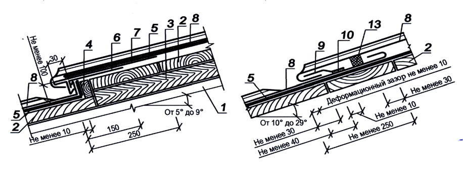
1 -стропило ; 2 -обрешетка ; 3 -доборный брус ; 4 -доска ; 5 -объемная диффузионная мембрана ; 6 -костыль ; 7 -металлическая полоса ; 8 -металлический лист ; 9 -фальшпланка ; 10 -припой ; 11 -загнутый край нижней картины ; 12 -загнутый край верхней картины ; 13 -уплотнительная лента
Рисунок 7.1 -Соединение кровельных картин вдоль ската с уклоном от 5º до 9º (9 % - 16 %) ( а ), от 10º до 29º (18 % - 45 %) ( б ), более 30º (47 %) ( в )
Необходимо герметизировать фальцы : на примыкании кровли к выступающим над нею кон -струкциям и разжелобку ( в ендове ), металлических листов карнизного свеса и настенного же -лоба ( лотка ), а также на кровле с уклоном менее 22º.
8Кровли из железобетонных лотковых панелей
9Водоотвод с кровли и снегозадержание
При применении локальных снегозадерживающих элементов схема их расположения зави -сит от типа и уклона кровли , которая должна быть предоставлена изготовителем этих элементов
АПриложение А. Свойства элементов вентилируемых стропильных и совмещенных крыш зданий и сооружений
А .1 Показатели подкровельных пленок приведены в таблице А .1.
Таблица А .1
| Наименование показателя , единица измерения | Диффузионная ветроводозащит - ная пленка , укладываемая по утеплителю с одним вентиляци - онным зазором | Водозащитная ( антиконденсат - ная ) пленка , укладываемая с образованием двух вентиляци - онных зазоров |
|---|---|---|
| 1 Плотность потока водяного пара по ГОСТ 25898, г / м ² за 24 ч , или | Не менее 300 | - |
| Эквивалентная толщина воздуха по ГОСТ 32318, м | Не более 0,03 | - |
| 2 Разрывная нагрузка при растяжении ( вдоль и поперек полотнища материала ), Н /5 см ( по ГОСТ 2678, ГОСТ 31899-2) | Не менее 115 | Не менее 200 |
| 3 Водонепроницаемость при давлении , МПа ( по ГОСТ 2678) | Не менее 0,001 | Не менее 0,001 |
| 4 Стойкость к ультрафиолетовым лучам , ч ( по ГОСТ 32317) | Не менее 336 | Не менее 336 |
| 5 Рабочая температура , ° С | От минус 40 до плюс 100 | От минус 40 до плюс 80 |
| Примечание - Изменение показателей 2 и 3 не должно быть более 15% нормируемых после воздействия ультрафиолетовых лучей по показателю 4. | Примечание - Изменение показателей 2 и 3 не должно быть более 15% нормируемых после воздействия ультрафиолетовых лучей по показателю 4. | Примечание - Изменение показателей 2 и 3 не должно быть более 15% нормируемых после воздействия ультрафиолетовых лучей по показателю 4. |
А .2 Высота вентиляционного канала в крышах стропильной конструкции приведена в таб -лице А .2.
Таблица А .2
| Длина ската крыши , м | Высота канала , мм , в крышах с уклоном , %( град ) | Высота канала , мм , в крышах с уклоном , %( град ) | Высота канала , мм , в крышах с уклоном , %( град ) | Высота канала , мм , в крышах с уклоном , %( град ) | Высота канала , мм , в крышах с уклоном , %( град ) |
|---|---|---|---|---|---|
| Длина ската крыши , м | 18 (10) | 27 (15) | 36 (20) | 47 (25) | 56 (30) |
| 5 | 50 | 50 | 50 | 50 | 50 |
| 10 | 80 | 60 | 50 | 50 | 50 |
| 15 | 100 | 80 | 60 | 50 | 50 |
| 20 | 100 | 100 | 80 | 60 | 50 |
| 25 | 100 | 100 | 100 | 80 | 60 |
А .3 Осушающая способность системы вентилируемых каналов и числа аэрацион -ных патрубков в совмещенной крыше зданий и сооружений
А .3.1 Количество влаги , г / м² , удаляемой из утеплителя через вентилируемые каналы за период со среднемесячными температурами выше 0 ° С , определяют по формуле n где f -площадь сечения канала , м² ;
N -число вентилируемых каналов на участке крыши или на всей крыше ; n -число месяцев со средней температурой наружного воздуха t i > 0 ° С ;
B 2 i -влагосодержание воздуха , выходящего из каналов , при температуре t i , г / м³ , определяют по формуле ( А .2);
B 1 i -фактическое влагосодержание воздуха , входящего в каналы при температуре t i и средней за этот месяц относительной влажности наружного воздуха , г / м³ , определяют по формуле ( А .5); τ i длительность месяца , с ; i v -средняя за месяц скорость движения воздуха в каналах , м / с ;
F -площадь крыши или ее участка , м² .
Влагосодержание воздуха , выходящего из каналов , определяют по формуле 1, 168
где Е к -парциальное давление насыщенного водяного пара на выходе воздуха из каналов , Па , определяется по с к t [4, таблицы С .1 и С .2]; с t к -температура воздуха на выходе из каналов , ° С , определяемая по формуле t k t k с t
здесь в -температура воздуха помещения , ° С ; k , k н -среднемесячная температура наружного воздуха с учетом солнечной радиации , определяемая с учетом прозрачности атмосферы : ψ н в -коэффициенты теплопередачи частей крыши ниже центра сечения канала и выше него , Вт /( м² ∙ ° С ); с t
здесь t н -среднемесячная температура наружного воздуха , ° С ( СП 131.13330.2012, таблица 5.1*); ρ -коэффициент поглощения теплоты ( для крупнозернистой посыпки верхнего слоя кровельного ковра 0, 75 ρ ); рад J -среднемесячное значение солнечной радиации , Вт / м² ( СП 131.13330.2012, таблица 8.1); ψ -коэффициент прозрачности атмосферы ( для городской застройки принимают ψ = 0,7); н α -коэффициент теплоотдачи [ принимают н α Вт /( м² ∙ ° С )]. 1, 168 е
где е н -упругость водяного пара наружного воздуха , средняя за данный месяц , Па .
А .3.2 В качестве примера расчета приведено определение осушающей способности вентилируемых и диффузионных каналов в конструкции ремонтируемой крыши .
Здание имеет размеры в плане 36×144 м , высота до вентиляционных отверстий 10 м . Выступающие над кровлей части здания отсутствуют . При ширине здания 36 м длина скатов с уклоном 1,5 % составляет 18 м . Параметры внутреннего микроклимата : t в = 18 ° С ; φ = 60 % для зимних условий и t в = 20 ° С ; φ = 60 % для летних .
Обследованием было установлено , что весовая влажность пенобетона с начальной плотностью ~ 400 кг / м³ на некоторых участках крыши составляет 22 %, 30 % и 40 % при нормативном значении 12 %.
Влагосодержание слоя пенобетона толщиной 100 мм при весовой влажности φ = 22 % составляет 400 ꞏ 0,1 ꞏ 0,22 = 8,8 кг / м² , при этом допустимое влагосодержание ( при = 12 %) - 4,8 кг / м² . Следовательно , количество сверхнормативной влаги составит 8,8 - 4,8 = 4 кг / м² , при влажности пенобетона 30 % - 7,2 кг / м² , а при влажности пенобетона 40 % - 11,2 кг / м² .
Было принято решение снять старый водоизоляционный ковер , выполнить ремонт стяжки , дополни -тельно утеплить крышу двумя слоями минераловатных плит , раздвинуть плиты с образованием вентили -руемых каналов шириной 100 мм через 1,1 м и диффузионных каналов шириной 50 мм через 550 мм попе -рек скатов ; поверх плит утеплителя следует уложить сборную стяжку из ЦСП толщиной δ = 12 мм или из хризотилцементных плоских листов толщиной δ = 12 мм ( рисунки А .1 и А .2).
А .3.3 Возможны два варианта конструктивных решений для сушки увлажненного утеплителя .
Первый вариант ( предпочтительный ) заключается в устройстве вентилируемых каналов в теплоизо -ляционном слое по всей поверхности крыши ( рисунок А .2) и сообщением их с наружным воздухом через козырек над парапетами продольных стен ( рисунок А .3). В данном случае под воздействием ветра в кана -лах происходят движение воздуха и сушка утеплителя .
Второй вариант -установить над частью вентилируемых и диффузионных каналов кровельные аэра -торы с внутренним диаметром патрубков 100 мм .
1 -новый водоизоляционный ковер ; 2 -сборная стяжка из ЦСП или хризотилцементных плоских листов ; 3 -минераловатные плиты ; 4 -вентилиру -емые каналы ; 5 -существующая стяжка из це -ментно -песчаного раствора ; 6 -увлажненный пе -нобетон
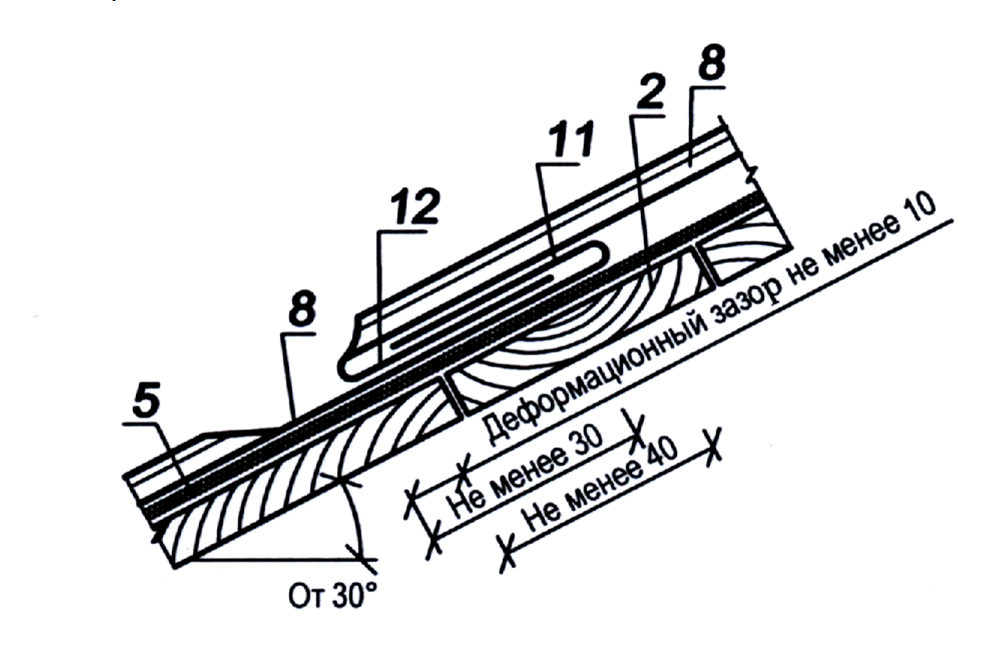
Рисунок А .1 -Вентилируемые каналы через 1,1 м ( в осях )
Первый вариант
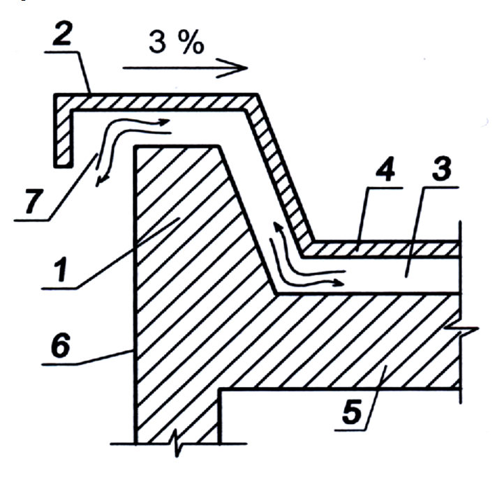
1 -вентилируемый канал ; 2 -диффузионные каналы ; 3 -движение влаги
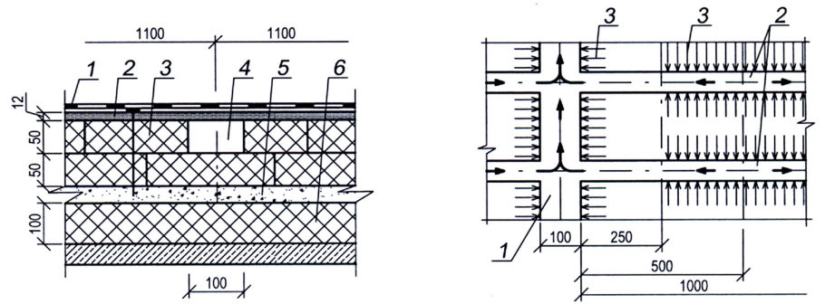
Рисунок А .2 -Расчетная схема вентиля -ции каналов и диффузии водяного пара
1 -парапет ; 2 -козырек ; 3 -вентилируемая воздушная прослойка или канал ; 4 -верхняя часть крыши ; 5 -нижняя часть крыши ; 6 -стена ; 7 -направления движения воздуха
Рисунок А .3 -Схема устройства парапетного узла вентилируемой крыши
Скорость движения воздуха в канале для каждого из n месяцев определяют по формуле k k где i V Θ -средневзвешенная скорость ветра , м / с , на высоте 10 м для каждого летнего месяца ; для данного расчета была принята 3, 4 i V Θ м / с ;
k 1, k 2аэродинамические коэффициенты на входе в канал и выходе из него приведены в таблице А .3. Для данного примера 0, 3 . 2 1 k k
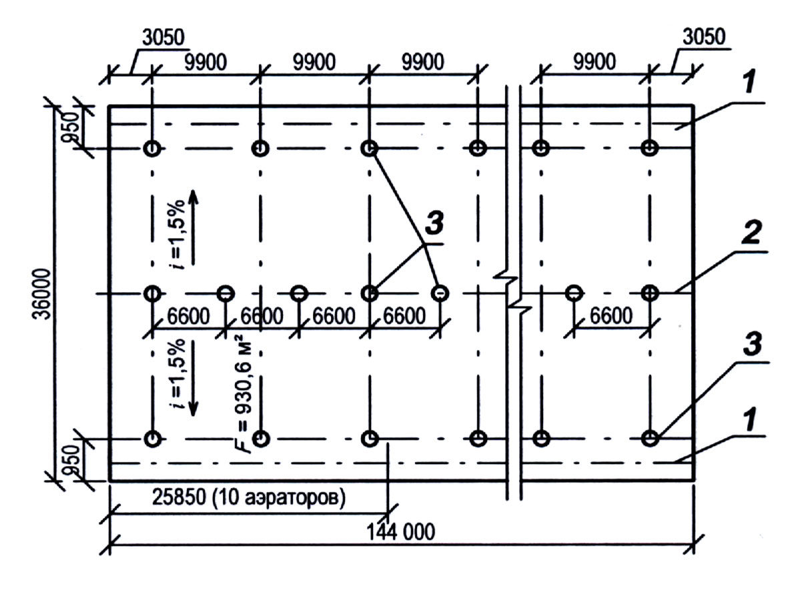
Если высота здания больше или меньше 10 м , скорость движения воздуха в канале опреде -ляют с учетом изменения скорости ветра i V Θ по высоте по формуле здесь i V Θ -средневзвешенная скорость ветра , м / с , на высоте меньше или больше 10 м для каждого лет -него месяца ;
Н -высота до входа в отверстие вентиляционного канала , м .
Таблица А .3
| Аэродинамические коэффициенты при | Аэродинамические коэффициенты при | Аэродинамические коэффициенты при | Аэродинамические коэффициенты при | Аэродинамические коэффициенты при | Аэродинамические коэффициенты при | ||
|---|---|---|---|---|---|---|---|
| Направление ветра , | Обозначение | 3 < S / H 0 < 6 | 3 < S / H 0 < 6 | 3 < S / H 0 < 6 | 6 < S /H 0 < 25 | 6 < S /H 0 < 25 | 6 < S /H 0 < 25 |
| град | L / H 0 | L / H 0 | L / H 0 | L / H 0 | L / H 0 | L / H 0 | |
| 1 | 2 | 3 | 4 | 6 | 8 | ||
| k 1 | +0,6 | +0,6 | +0,6 | +0,5 | +0,5 | +0,5 | |
| 90 о | k 2 | -0,6 | -0,2 | -0,15 | -0,15 | -0,1 | -0,05 |
| 45 о | k 1 k 2 | +0,2 -0,8 | +0,2 -0,6 | +0,2 -0,3 | +0,2 -0,1 | +0,2 -0,1 | +0,2 -0,1 |
S -длина зданий , м ; Н 0 высота здания от уровня земли до верха козырька , м ; L -ши -рина здания , длина вентилируемого канала , м .
L -длина вентилируемого канала , м ;
Л -коэффициент сопротивления трению , определяется по формуле 1
Δ
где -приведенная шероховатость стенок канала ;
Δ
Δ
Δ здесь 2 1 -абсолютная шероховатость материала стенок канала , принимаемая по таблице А .4;
Δ и
Таблица А .4 -Абсолютная шероховатость основных материалов , используемых в вен -тилируемых крышах
| Типы поверхностей | Абсолютная шероховатость , Δ i мм |
|---|---|
| Хризотилцементные , ЦСП | 0,6 |
| Деревянные остроганные | 0,3 |
| Деревянные неостроганные | 2,0 |
| Бетонные из необработанного бетона | 0,3 |
| Шлакобетонные , опилко - алебастровые и т . д . | 1,5 |
| Из штучных изделий ( блоков , плит , кирпичей ) без за - полнения швов | 10,0 |
| Из штучных теплоизоляционных изделий с заполне - нием швов | 6,0 |
d -эквивалентный диаметр канала , м ; для канала прямоугольного сечения со сторонами а и b определяют по формуле ab 2
При сечении канала с а = 0,1 м и b = 0,05 м получают d = 0,067 м . 0, 006 0, 0006
Для данного примера расчета 0, 0493 . 0, 067 2 Δ 1 ξ
ξ
Средняя скорость движения воздуха в вентилируемом канале за летний период , рассчитанная по формуле ( А .6), составит 0,23 м / с .
Результаты расчетов количества влаги q , г / м² , удаляемой из утеплителя через вентилируемые ка -налы за один летний сезон , приведены в таблице А .5.
Таблица А .5
| Наименование | Апрель | Май | Июнь | Июль | Август | Сентябрь | Октябрь |
|---|---|---|---|---|---|---|---|
| t н , º С | 4,4 | 11,9 | 16,0 | 18,1 | 16,3 | 10,7 | 4,3 |
| н ,% | 66 | 58 | 59 | 63 | 68 | 73 | 78 |
| е н , Па | 552 | 813 | 1066 | 1293 | 1266 | 933 | 653 |
| В 1 , г / м³ | 4,3 | 6,2 | 8,0 | 9,6 | 9,5 | 7,1 | 5,1 |
| J рад , Вт / м² | 232 | 322 | 343 | 333 | 261 | 174 | 84 |
| с к t , º С | 10,5 | 20,3 | 24,9 | 26,8 | 23,1 | 15,2 | 6,5 |
| Е к , Па | 1321 | 2381 | 3093 | 3421 | 2792 | 1761 | 1029 |
| В 2 , г / м³ | 10,1 | 17,6 | 25,6 | 24,8 | 20,5 | 13,2 | 8,0 |
| q , г / м² | 455 | 925 | 1146 | 1234 | 893 | 479 | 236 |
| 2 г / м 5368 q | 2 г / м 5368 q | 2 г / м 5368 q | 2 г / м 5368 q | 2 г / м 5368 q | 2 г / м 5368 q | 2 г / м 5368 q | 2 г / м 5368 q |
Необходимо рассчитать время Т , необходимое для сушки увлажненного утеплителя с учетом суще -ствующей влажности утеплителя и возможной технологической влаги при укладке теплоизоляции . Для этого в качестве источника увлажнения принимают 20минутный дождь интенсивностью Q 20 с вероятностью максимальной интенсивности 50 %, учитывая относительно небольшую площадь крыши и соотношение сторон здания в плане . Так , например , при Q 20 = 80 л /( сꞏга ) дополнительное увлажнение утеплителя может составить 0,5 ꞏ 0,12 ꞏ 80 = 4,8 кг / м² .
Время Т в летних сезонах с учетом воздействия солнечной радиации , в течение которого весовая влажность пенобетона и минераловатного утеплителя достигнут нормативного значения , составит :
- .
- при пен = 22 % Т = (4 + 4,8)/5,368 ≈ 1,6 летнего сезона ; -при пен = 30 % Т = (7,2 + 4,8)/5,368 ≈ 2,2 летнего сезона ; -при пен = 40 % Т = (11,2 + 4,8)/5,368 ≈ 3,0 летнего сезона
Второй вариант
При отсутствии возможности выполнения парапета по схеме , приведенной на рисунке А .3, над ме -стами пересечения вентилируемых и диффузионных каналов устанавливают кровельные аэраторы , тре -буемое число и диаметры которых определяются расчетом . На рисунке А .4 и А .5 показаны план кровли рассматриваемого здания и пример установки аэраторов .
На участке крыши площадью 930,6 м² предварительно устанавливают 10 аэраторов диаметром 100 мм из условия действия одного аэратора на площади 80-90 м² , а на всей площади крыши , равной 5184 м² , - 56 аэраторов .
1) Идельчик И . Е . Справочник по гидравлическим сопротивлениям -М .: Машиностроение , 1992.
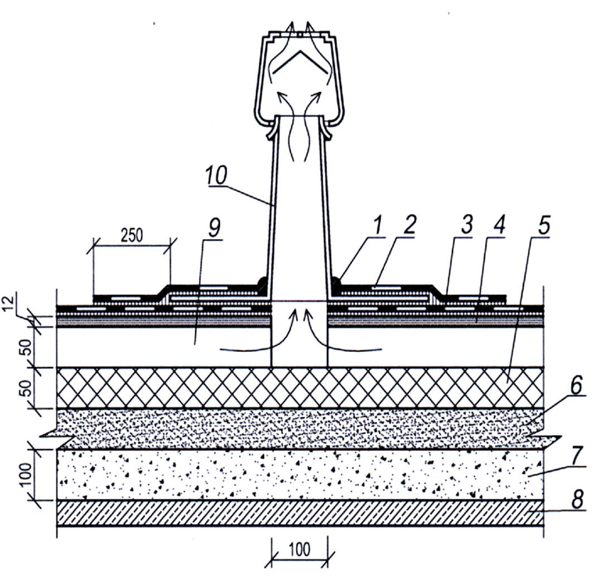
Для крыши здания размером в плане не более 48 × 144 м и высотой 10 м на базе 6-18 м как вдоль , так и поперек линии конька в патрубках аэраторов одинакового диаметра при всех направлениях ветра скоростью 2-5 м / с возникает разность давлений Р , составляющая 0,12-0,14 кгс / м² , в результате чего в вентилируемых каналах происходит движение воздуха . В этом случае скорость движения воздуха в канале определяют по формуле ( А .10). При высоте здания больше или меньше 10 м скорость движения воздуха в V канале определяется по формуле ( А .6) с учетом изменения скорости ветра i Θ по высоте [ формула А .6 а )].
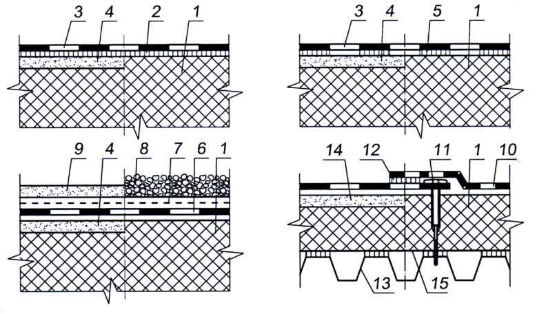
1 -герметик ; 2 -дополнительный водо -изоляционный ковер ; 3 -основной водо -изоляционный ковер ; 4 -сборная стяжка из ЦСП или хризотилцементных плоских листов ; 5 -минераловатные плиты ; 6 -монолитная существующая стяжка ; 7 -увлажненный пенобетон ; 8 -железобетонная несущая плита ; 9 -вентилируемый канал ; 10 -аэратор диа -метром 100 мм
Рисунок А .5 -Пример установки кровельного аэратора ( вентиляционного патрубка ) диаметром 100 мм
Скорость движения воздуха в каналах между двумя аэраторами определяют по формуле Δ Р
где Y ср -объемная плотность воздуха , кг / м³ , определяемая по формуле t
,
здесь к -температура в канале , о С , определяемая по формуле 2 с
g -ускорение силы тяжести , равное 9,81 м / с 2 .
При подстановке исходных данных в формулу ( А .10) скорость движения воздуха в вентилируемых каналах составит 0,11 м / с , а количество влаги , удаляемой из утеплителя за один летний сезон , приведено в таблице А .6.
Таблица А .6
| Наименование | Апрель | Май | Июнь | Июль | Август | Сентябрь | Октябрь |
|---|---|---|---|---|---|---|---|
| t н , º С | 4,4 | 11,9 | 16,0 | 18,1 | 16,3 | 10,7 | 4,3 |
| н ,% | 66 | 58 | 59 | 63 | 68 | 73 | 78 |
| е н , Па | 552 | 813 | 1066 | 1293 | 1266 | 933 | 653 |
| В 1 , г / м³ | 4,3 | 6,2 | 8,0 | 9,6 | 9,5 | 7,1 | 5,1 |
| J рад , Вт / м² , | 232 | 322 | 343 | 333 | 261 | 174 | 84 |
| с к t º С | 10,5 | 20,3 | 24,9 | 26,8 | 23,1 | 15,2 | 6,5 |
| Е к , Па | 1321 | 2381 | 3093 | 3421 | 2792 | 1761 | 1029 |
| В 2 , г / м³ | 10,1 | 17,6 | 25,6 | 24,8 | 20,5 | 13,2 | 8,0 |
| q , г / м² | 227 | 463 | 573 | 632 | 432 | 239 | 118 |
| 2 г / м 2684 q | 2 г / м 2684 q |
Так как скорость движения воздуха в вентилируемых каналах и количество удаляемой влаги из утеп -лителя за летний сезон в два раза меньше , чем в предыдущем конструктивном решении ( рисунок А .3 и таблица А .3), то время сушки Т в летних сезонах составит :
- при пен = 22 % Т = (4 + 4,8)/2,684 ≈ 3,3 летнего сезона ;
- при пен = 30 % Т = (7,2 + 4,8)/2,684 ≈ 4,5 летнего сезона ;
- при пен = 40 % Т = (11,2 + 4,8)/2,684 ≈ 6,0 летнего сезона .
В первые зимние месяцы сушки , как правило , происходят активное перемещение влаги из пенобе -тона в толщу минераловатных плит и перераспределение влагосодержания утеплителей по площади крыши . При недостаточных или неправильно выполненных нахлестках рулонных пароизоляционных мате -риалов и некачественной герметизации стыков несущих плит или профнастила кратковременные протечки могут появиться там , где их не было до начала сушки . Во второй зимний период сушки эти протечки , как правило , уже не возникают .
БПриложение Б. Конструкции водоизоляционного ковра из рулонных и мастичных материалов
Характеристики водоизоляционных ковров из наплавляемых и полимерных рулонных материалов , рулонных материалов , наклеиваемых на мастиках , а также из битумосодержащих мастичных материалов приведены в таблицах Б .1 Б .3.
Таблица Б .1 -Водоизоляционный ковер из наплавляемых ( ГОСТ 32805) и полимерных рулонных материалов
| Рулонный материал и его показатели | Число слоев в основном во - доизоляционном ковре при уклоне кровли , % | Число слоев в основном во - доизоляционном ковре при уклоне кровли , % | Число слоев в дополни - тельном водоизоляцион - ном ковре | Число слоев в дополни - тельном водоизоляцион - ном ковре | Защитный слой |
|---|---|---|---|---|---|
| Рулонный материал и его показатели | Менее 1,5 | 1,5 и более | Парапет ( стена ) и т . п . | Конек , ендова ( воронка ) | Защитный слой |
| Битумный наплавляемый с гибкостью при темпера - туре от 0 C до 5 C и теплостойкостью в соответствии с 5.1.26 | 4 | 3 | 2 | 1 | Из гравия , наклеенного на мастике , - в соответ - ствии с 5.2.2 либо из крупнозернистой по - сыпки или металличес - кой фольги на верхнем слое рулонного матери - ала ; для эксплуатируе - мых кровель - в соответствии с 5.3.3 |
| Битумный наплав - ляемый с гибкостью при температуре минус 15 C - 0 C и теплостой - костью в соответствии с 5.1.26 | 3 | 2*-3 | 2 | 1 | Из гравия , наклеенного на мастике , - в соответ - ствии с 5.2.2 либо из крупнозернистой по - сыпки или металличес - кой фольги на верхнем слое рулонного матери - ала ; для эксплуатируе - мых кровель - в соответствии с 5.3.3 |
| Битумно - полимерный наплавляемый с гибкостью при температуре не выше минус 15 С и теплостойкостью в соответствии с 5.1.26 | 2** | 1***-2** | 1**-2 | 1 | Из гравия , наклеенного на мастике , - в соответ - ствии с 5.2.2 либо из крупнозернистой по - сыпки или металличес - кой фольги на верхнем слое рулонного матери - ала ; для эксплуатируе - мых кровель - в соответствии с 5.3.3 |
| Эластомерный вулка - низованный или термо - пластичный с гибкостью при температуре не выше минус 40 С и минус 20 С соответст - венно , свободно уложенный на основание под кровлю с пригрузом или механическим креп - лением | 1 | 1 | 1 | - | Пригруз из гравия или бетонных плиток ; для эксплуатируемых кровель - защитный слой в соответствии с 5.3.2 |
* При суммарной прочности на разрыв двухслойного ковра не менее 900/700 ( Н /5 см ).
** В двухслойном водоизоляционном ковре допускается нижний слой закреплять механическим способом
1.
*** При применении приклеиваемого или закрепляемого механическим способом материала толщиной не менее 5 мм с относительным удлинением не менее 30 % и прочностью вдоль / поперек полотна не менее 900/700 ( Н /5 см ) по ГОСТ 31899-1.
Примечание -Не допускается применение битумных наплавляемых рулонных материалов с армирующей основой из стеклохолста для нижнего слоя водоизоляционного ковра по выравнивающим стяжкам и сборным железобетонным плитам . при суммарной прочности водоизоляционного ковра не менее
900/700 (
Н
/5 см
) по
ГОСТ
31899-
Таблица Б .2 -Водоизоляционный ковер из рулонных материалов , наклеиваемых на мастиках
| Рулонный материал , приклеивающая мастика и ее показатели | Число слоев в основном водозащитном ковре при уклоне кровли ,% | Число слоев в основном водозащитном ковре при уклоне кровли ,% | Число слоев в дополни - тельном водозащитном ковре | Число слоев в дополни - тельном водозащитном ковре | Защитный слой |
|---|---|---|---|---|---|
| Рулонный материал , приклеивающая мастика и ее показатели | Менее 1,5 | 1,5 и более | Парапет ( стена ) и т . п . | Конек , ендова ( воронка ) | Защитный слой |
| Рулонные материалы , наклеиваемые на холодных или горячих мастиках с гибкостью от 0 С до 5 С и теплостойкостью в соответствии с 5.1.26 | 4 | 3 | 2 | 2 | Из гравия , накле - енного на мастике , - в соответствии с 5.2.2 либо из крупнозернистой посыпки или металлической фольги на верхнем слое рулонного материала ; для эксплуатируемых кровель - в соответствии с 5.3.3 |
| Рулонные материалы , наклеи - ваемые на холодных или горя - чих мастиках с гибкостью при температуре от минус 15 C до 0 C и теплостойкостью в соответствии с 5.1.26 | 3 | 2*-3 | 2 | 1 | Из гравия , накле - енного на мастике , - в соответствии с 5.2.2 либо из крупнозернистой посыпки или металлической фольги на верхнем слое рулонного материала ; для эксплуатируемых кровель - в соответствии с 5.3.3 |
| Рулонные материалы , наклеи - ваемые на холодных или горя - чих мастиках с гибкостью при температуре не выше минус 15 C и теплостойкостью в соответствии с 5.1.26 | 2 | 1**-2 | 1**-2 | 1 | Из гравия , накле - енного на мастике , - в соответствии с 5.2.2 либо из крупнозернистой посыпки или металлической фольги на верхнем слое рулонного материала ; для эксплуатируемых кровель - в соответствии с 5.3.3 |
| Эластомерный вулканизован - ный или термопластичный с гибкостью при температурах не выше минус 40 С и минус 20 C соответственно , наклеиваемый на полимерной или горячей мастиках соответственно ( для термопластичных рулонных материалов сдублирующим слоем из стеклохолста или полиэстера ) | 1 | 1 | 1 | - | - |
* При суммарной прочности на разрыв двухслойного ковра не менее 900/700 ( Н /5 см ).
** При применении материала толщиной не менее 5 мм с относительным удлинением не менее 30 % и прочностью вдоль / поперек полотна не менее 900/700 ( Н /5 см ) по ГОСТ 31899-1.
Примечание -Не допускается применение битумных наклеиваемых рулонных материалов с армирующей основой из стеклохолста для нижнего слоя водоизоляционного ковра по выравнивающим стяжкам и сборным железобетонным плитам .
Таблица Б .3 -Водоизоляционный ковер из битумосодержащих мастичных материалов ( ГОСТ 30693)
| Горячая или холодная мастика и ее показатели | Число слоев мастик ( в скобках - армирующих прокладок ) в основном водоизоляционном ковре - в числителе и минимальная толщина ковра из горячих ( в скобках - холодных ) мастик - в знаменателе при уклоне кровли ,% | Число слоев мастик ( в скобках - армирующих прокладок ) в основном водоизоляционном ковре - в числителе и минимальная толщина ковра из горячих ( в скобках - холодных ) мастик - в знаменателе при уклоне кровли ,% | Число слоев мастик ( в скобках - армирующих прокладок ) в дополнительном водоизоляционном ковре - в числителе и минимальная толщина ковра из горячих ( в скоб - ках - холодных ) мастик - в знаменателе | Число слоев мастик ( в скобках - армирующих прокладок ) в дополнительном водоизоляционном ковре - в числителе и минимальная толщина ковра из горячих ( в скоб - ках - холодных ) мастик - в знаменателе | Защитный слой |
|---|---|---|---|---|---|
| Менее 1,5 | 1,5 и более | Парапет ( стена ) и т . п . | Конек , ендова ( воронка ) | ||
| Мастика с гибкостью при температуре от минус 15 С до минус 5 C и теплостой - костью в соот - | ( 3) 4 | ( 3) 4 | ( 3) 4 ( 2) 2 | ( 1, 2 ( 1) 1 | Из гравия , наклеенного на мастиках , или из окрасочного состава в соответствии с 5.2.2; для эксплуатируемых кровель - в соответствии с 5.3.3 |
| ветствии с | ( 6) 8 | ( 6) 8 | 5) | Из гравия , наклеенного на мастиках , или из окрасочного состава в соответствии с 5.2.2; для эксплуатируемых кровель - в соответствии с 5.3.3 | |
| 5.1.26 Мастика с гибкостью при температуре не выше минус 15 С и теплостой | ( 3) 4 ( 2) 2 | ( 1, 5) 2 ( 1) 1 | Из гравия , наклеенного на мастиках , или из окрасочного состава в соответствии с 5.2.2; для эксплуатируемых кровель - в соответствии с 5.3.3 | ||
| - костью в соот - ветствии с 5.1.26 | ( 4, 5) 6 | ( 4, 5) 6 | Из гравия , наклеенного на мастиках , или из окрасочного состава в соответствии с 5.2.2; для эксплуатируемых кровель - в соответствии с 5.3.3 |
ВПриложение В. Расчет водоизоляционного ковра на ветровые нагрузки
В .1 Расчет водоизоляционного ковра на ветровые нагрузки зависит от способов его укладки ( рисунок В .1), к которым относятся : сплошная приклейка всех слоев ковра ; частичная ( точечная или полосовая 25 % - 35 %ная ) приклейка ; механическое крепление нижнего слоя ковра в местах нахлестов полотнищ рулон -ного материала ; свободная укладка ковра с пригрузом .
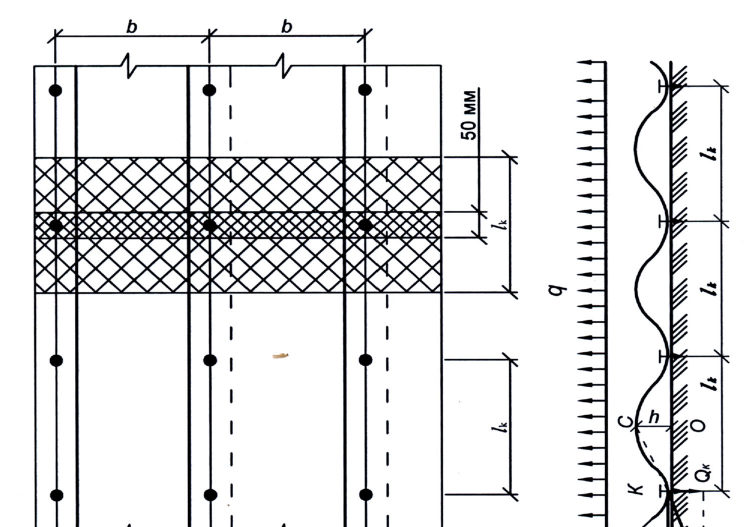
1 -теплоизоляция ; 2 -сплошная приклейка ; 3 -ковер ; 4 -выравнивающая стяжка ; 5 -частичная при -клейка ковра ; 6 -свободно уложенный ковер ; 7 -предохранительный слой ; 8 и 9 -пригруз из гравия или бетонных плиток ( монолитный цементно -песчаный раствор , асфальтобетон ); 10 -механически закреп -ленный ковер ; 11 -крепежный элемент с шайбой ; 12 -приклейка ( сварка ) продольных кромок рулонных материалов ; 13 -профилированный настил ; 14 -сборная стяжка ; 15 -пароизоляция
Рисунок В .1 -Способы укладки водоизоляционного ковра
В .2 Самым надежным способом крепления водоизоляционного ковра является сплошная приклейка его по всей поверхности плотного ( малопористого ) основания под кровлю ( например , из асфальтобетона , цементно -песчаного раствора или бетона и т . п .). Однако и в этом случае ветровая нагрузка W , Па , опре -деляемая по СП 20.13330, не должна превышать значения прочности сцепления ковра с основанием и между слоями Q , Па , т . е . должно выполняться условие
Если при наклейке кровельного материала на волокнистое основание отрыв происходит по волокни -стому материалу ( когезионный разрыв ), то ветровая нагрузка в этом случае не должна быть больше напря -жения растяжения Р , Па , волокнистого материала
В .3 При точечной или полосовой 25 % - 35 %ной наклейке должны соблюдаться следующие условия : 25
В .4 При свободной укладке водоизоляционного ковра ( с проклейкой швов ) с пригрузом последний принимают таким , чтобы распределенная поверхностная нагрузка от него Р п , Па , превышала значение вет -ровой нагрузки
а ) в
)
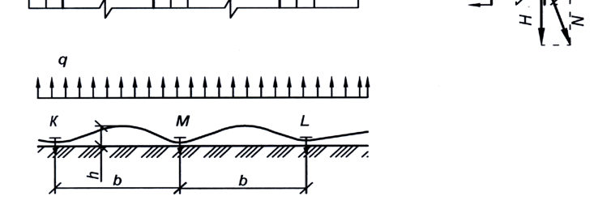
b -ширина полотнищ рулонного материала ; Н -распор ; h -высота подъема кровельного ковра ; l k -расстояние между крепежными элементами ; N -продольное усилие ; q -распределенная ветровая нагрузка , Н / м ; С , К , L, М , О -точки
Рисунок В .2 -План участка водоизоляционного ковра ( а ) и схема деформирования ковра ( б и в )
В .5 На рисунке В .2 показан план крыши , над водоизоляционным ковром которой создается отрицательное давление , т . е . подъемная сила , приводящая к деформированию ковра .
Приняв ковер в сечении в виде нити шириной 50 мм , закрепленной по концам и нагруженной распре -деленной ветровой нагрузкой q ( см . рисунок В .2), получают , что продольное усилие N состоит из распора Н ( горизонтальная составляющая ) и поперечной силы Q ( вертикальная составляющая ) и равно
Высоту подъема кривой равновесия нити определяют из прямоугольного треугольника КОС ( рисунок В .2), принимая КС = КО + l , где КО = 0,5 м , а l -удлинение рулонного материала при нагревании в летний период , равное 0,01 м , исходя из показателя относительного удлинения , равного 2 %. 0, 1 0, 5 0, 51 2 2 h
Значение нагрузки , действующей на водоизоляционный ковер и крепежный элемент на базе l k ( ри -сунок В .2), равной произведению продольного усилия N в гибкой полоске ( нити ) на l k , должна быть не более прочности рулонного материала F кр ( Н /5 см ), т . е . должно выполняться условие N l k ≤ F кр , тогда кр кр
В .6 Прочность материала F кр , определяемая методом растяжения полоски этого материала шириной 5 см до разрыва , может меняться в процессе эксплуатации в водоизоляционном ковре , например сни -жаться в летний период . Кроме того , рулонный материал в ковре закрепляют точечно , что также влияет на его показатель прочности . Поэтому формула ( В .9) для определения шага крепежных элементов l к , см , при -мет следующий вид : кр
где k э = 0,8 коэффициент , учитывающий влияние эксплуатационных воздействий на свойства рулонного материала ; k m = 0,7 коэффициент , учитывающий механическое крепление рулонного материала .
После преобразований формула ( В .10) примет следующий вид ( при l k в сантиметрах , W в Паскалях , F кр в Ньютонах ): F
Значение W, Па , определяют для каждого участка кровли согласно СП 20.13330.2016 ( приложение В ).
В .7 Шаг крепежных элементов , определяемый расчетом , должен быть в пределах 150 -350 мм ; при большем значении расчетного шага его принимают равным 350 мм .
При шаге менее 150 мм кровельный материал дополнительно крепят по его центральной оси , за -крывая крепежные элементы полосой рулонного материала и приваривая ее по кромкам или приклеивая к основному водоизоляционному ковру .
Рулонный материал шириной b ≥ 1 м также дополнительно крепят по центральной оси , закрывая места крепления полосой материала .
В двухслойном водоизоляционном ковре из битуминозных рулонных материалов с механическим креплением нижнего слоя шаг крепежных элементов рассчитывают , как для однослойной кровли .
ГПриложение Г. Кровли из рулонных и мастичных материалов
Г .1 Конструктивные решения неэксплуатируемых кровель приведены на рисунке Г .1
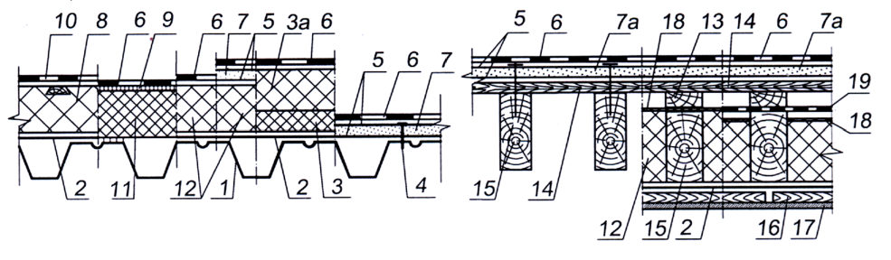
б )
1 -металлический листовой гофрированный профиль ; 2 -пароизоляция ; 3 -теплоизоляционные плиты из минеральной ваты ( ГОСТ 9573, ГОСТ 32314) или стекловолокна ( ГОСТ 10499) с прочностью на сжатие при 10 %-ной линейной деформации не менее 40 кПа ; 3 а -плиты из пенополистирола ( ГОСТ 15588) или минеральной ваты с прочностью на сжатие при 10 %ной линейной деформации не менее 100 или 60 кПа соответственно ; 4 -крепежный элемент ; 5 -грунтовка ; 6 -водоизоляционный ковер ( см . приложение Б ); 7 -сборная стяжка из прессованных хризотилцементных плоских листов ( ГОСТ 18124) или цементно -стружечных плит ( ГОСТ 26816); 7 а -сплошной настил из досок ( ГОСТ 8486), водостойкой фанеры ( ГОСТ 3916.2) или ОСП -3, ОСП -4; 8 -теплоизоляция из пенополиуретановых плит с деревянными вкладышами ; 9 -слой битума ; 10 -водоизоляционный ковер из полимерных ( эластомерных или термопластичных ) рулонных материалов ; 11 -теплоизоляция из пеностекла ; 12 -плитный утеплитель ; 13 -контробрешетка ; 14 -обрешетка ; 15 -стропило ; 16 -каркас под обшивку ; 16 а -деревянный брус ; 17 -внутренняя обшивка ; 18 -диффузионная ветроводозащитная пленка ; 19 -водозащитная пленка ; 20 -двухканальный зазор ; 21 -монолитная выравнивающая стяжка из цементно -песчаного раствора ( ГОСТ 28013, ГОСТ 31357), мелкозернистого бетона ( ГОСТ 26633) или асфальтобетона ( ГОСТ 31015); 22 -разделительный слой ; 23 -монолитный утеплитель ( например , полистиролбетон по ГОСТ Р 51263 или легкий бетон по ГОСТ 25820); 24 -одноканальный зазор ; 25 -сборные или монолитные плиты
Рисунок Г .1 -Неэксплуатируемые кровли с несущими волнистыми листами , металлическими листовыми профилями и деревянными стропилами ( а ) и монолитными или сборными несущими железобетонными плитами ( б )
Г .2 Конструктивные решения эксплуатируемых , инверсионных и озелененных кровель приведены на рисунке Г .2.
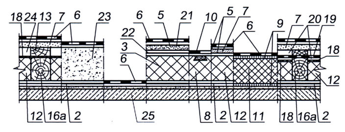
1 -сборные или монолитные железобетонные плиты ; 2 -выравнивающая стяжка из цементно -песчаного раствора или слой литого асфальтобетона ; 3 -пароизоляция ; 4 -уклонообразующий слой ; 5 -теплоизоляция ; 6 -разделительный слой ; 7 -цементно -песчаная стяжка ; 8 -водоизоляционный ковер ; 9 -фильтрующий слой ( нетканый геотекстиль ); 10 -регулируемая опора ; 11 -тротуарная плитка ; 12 -гранитный щебень толщиной не менее 150 мм ; 13 -бетонная , гранитная плитка или брусчатка ; 14 -цементно -песчаная смесь ; 15 -асфаль -тобетон ; 16 -армированная бетонная плита ; 17 -предохранительный слой , например из геотекстиля с проч -ностью при статическом продавливании не менее 1300 Н ( ГОСТ Р 56335); 18 -армированная цементно -песчаная стяжка ; 19 -гравийный слой ; 20 -противокорневая пленка ; 21 -дренажно -водонакопительная мембрана ; 22 -почвенный слой ; 23 -растительный слой ; 24 -влагонакопительный мат или дренажно -удержи -вающий элемент ( для кровли с уклоном более 3 %); 25 -экструзионный пенополистирол ( ГОСТ 32310); 26 -дренажный слой ( мат ); 27 -средний или крупный песок или гранитный отсев фракцией 2-5 мм толщиной 3050 мм ; 28 -резиновое покрытие ; 29 -террасная доска ; 30 -лаги для террасной доски ; 31 -засыпка между регулируемыми опорами гранитным щебнем фракции 20-40 мм толщиной не менее 50 мм ; 32 -керамзитовый гравий по уклону
- Г .3 Техническая характеристика материалов
- Г .3.1 Фильтрующий слой ( нетканый геотекстиль ): толщина - 1 мм ; поверхностная плотность - 150 г / м² ; прочность при статическом продавливании -не менее 2025 Н ; прочность при растяжении -не менее 2
- 500 Н /5 см ; водопроницаемость -не менее 50 л /( м ꞏс ). Г .3.2 Дренажная водонакопительная мембрана : высота -не менее 25 мм ; толщина -не менее 2,1 мм ; поверхностная плотность -не менее 1700 г / м² ; водонакопление -не менее 3 л / м² ; прочность на сжатие -не менее 250 кН / м² . Г .3.3 Влагонакопительный мат : геотекстиль толщиной не менее 5 мм ; поверхностная плотность -не менее 470 г / м² ; водонакопление -не менее 5 л / м² ; прочности при статическом продавливании -не менее 2000 Н . Влагонакопительный мат не допускается применять в инверсионной кровле и по бетонной или це -ментно -песчаной стяжке , уложенной по водоизоляционному ковру .
- Г .3.4 Противокорневая пленка : толщина -не менее 350 мкн ; поверхностная плотность -не менее 300 г / м² ; прочность при растяжении -не менее 40 Н / мм² ; относительное удлинение при разрыве -не менее 400 %.
ДПриложение Д. Элементы озеленения кровли и объектов благоустройства
Д .1 В качестве субстрата для растений на кровле используют специально подготовленную смесь органических и минеральных компонентов , свободных от сорняков , вредителей и болезнетворных микроорганиз -мов , которая должна обладать следующими свойствами : химическая нейтральность и инертность , легкая механическая структура , высокий коэффициент влагоудержания , высокая степень аэрируемости . Она должна содержать оптимальное количество основных элементов питания , необходимых для успешного роста и развития растений , обладать высокой дренирующей способностью , содержать органические вещества низкой степени разложения , не иметь в своем составе мелкодисперсных частиц .
Субстрат должен быть также достаточно плодородным , т . е . содержать в 20 г не менее 6 мг легкогидролизуемого ( доступного ) растениям азота и не менее чем по 10 мг фосфорного ангидрида ( Р 2 О 5 ) и окиси калия ( К 2 О ).
Плодородие субстрата повышают введением в него минеральных и органических удобрений и добавок ( песка , торфа , керамзита , перлита и т . п .).
Д .2 Используемые для субстрата компоненты должны удовлетворять следующим требованиям :
- они должны быть инертны , не изменять химический состав почвенного раствора и не оказывать токсическое действие на растения ;
- соотношение воды и воздуха в почвенном субстрате при поливе должно быть благоприятным для нормальной жизнедеятельности растений , что достигается соответствующими размерами частиц суб -страта . Оптимальными считаются частицы диаметром 3-6 мм , допускается наличие частиц до 1 см ;
- почвенный субстрат должен обладать достаточной механической прочностью и долговечностью в сочетании с небольшим объемным весом .
Д .3 Важное значение имеет кислотность почв , которую определяют по шкале рН :
- сильно кислые почвы
………………………. ниже 4;
- средне кислые
» …. …………………….
4,1-4,5;
- слабо кислые
»……………………………
4,6-5,2;
- нейтральные
»……………………………
6,7-7,4;
- щелочные »……………………………
7,5 и более .
Следует избегать применения удобрений , имеющих щелочную реакцию , чтобы избежать негативно -гое воздействия на кровлю .
- Д .4 Мощность субстрата , рекомендованная для различных типов растительности : почвопокровные ( очитки , седумы ) - 7-10 см ; цветы ( однолетние , многолетние ) - 15-20 см ; газон - 20-25 см ; кустарники -30-40 см ; деревья - 70-90 см .
- Д .5 На кровле кроме зеленых насаждений устраивают пешеходные дорожки и детские или спортив -ные площадки , зоны отдыха . Основной тип покрытия для дорожек и зоны отдыха -тротуарная плитка раз -мерами 50×50 из бетона марки 400 с морозостойкостью не менее 300 циклов , а для детских и спортивных площадок -упругоэластичное бесшовное покрытие с шероховатой поверхностью ( например , из резиновой крошки ).
- Д .6 Площадки отдыха взрослого населения на кровле должны устраиваться таким образом , чтобы была обеспечена возможность просмотра окрестностей через проемы в парапете ограждения . На них уста -навливаются скамьи и столики , возможно устройство пергол , увитых вьющимися растениями . Столики и скамьи должны быть удалены от парапета на расстояние не менее 1,5 м , чтобы исключить возможность залезания детей на парапет ограждения . На детских площадках могут быть установлены малые архитек -турные формы в соответствии с таблицей Д .1.
Таблица Д .1
| Наименование малых ар - хитектурных форм | Материал | Длина , м | Высота , м | Ширина , м |
|---|---|---|---|---|
| Качели из труб | Металл , сиденье деревянное | 1,50 | 1,50 | 1,66 |
| Качалка | Металл , дерево | 3,00 | 3,00 | 0,64 |
| Лиана | Дерево | 2,76 | 0,77 | 1,83 |
| Песочница | Дерево | 1,47 | 1,47 | 0,18 |
| Стол со скамьями | Дерево | 2,00 | 1,40 | 0,82 |
| Скамьи | Металл , дерево | 2,08 | 0,80 | 0,80 |
В соответствии с пожеланиями заказчика набор малых архитектурных форм может быть скорректи -рован в сторону как уменьшения , так и расширения номенклатуры .
- Д .7 Возможны следующие виды участков с растительностью на кровле :
- высадка неприхотливых растений типа седумов ;
- установка клумб с однолетними и многолетними цветами ;
- устройство газонов ( посев семян газонных трав в подготовленный субстрат или использование рулонного газона );
- устройство садов с деревьями , кустарниками , декоративными водоемами и т . п .
- Требования к посадочным материалам -по СП 82.13330.
- В местах , где необходима повышенная мощность субстрата , по краям участка возводят подпорные стенки из легких материалов , устанавливая их на бетонную подготовку , выполняемую непосредственно на дренажном элементе .
- Д .8 Все малые архитектурные формы , детские городки , столбики для ограждений , ванны для декоративных водоемов , столбы для освещения и другие элементы , требующие дополнительного крепления , монтируют на бетонной подготовке необходимых размеров и прочности с закладными , выполняемой непосредственно на дренажном элементе для обеспечения свободного водоотведения .
- Д .9 Для озеленения кровель рекомендуется использовать древесные кустарники и деревья с плоскокомной корневой системой .
- Д .10 Другая форма озеленения кровли -высаживание растений в емкостях -вазонах ; возможно применение вертикального озеленения . Небольшие по размеру емкости с растениями удобны , легко перемещаются с одного места на другое , что позволяет создавать различные композиции из растений .
- Д .11 Для отдельно стоящих малых архитектурных форм с грядками и газонами , расположенными непосредственно на эксплуатируемой кровле , можно применять широкие (1-2 м ) длинные емкости глубиной 0,3-0,4 м . Для ампельных ( со свисающими , стелющимися или ползучими стеблями ) растений часть емкостей -цветочниц размещают на подставках высотой 0,3-0,4 м от поверхности . Емкости могут быть изготовлены из железобетона , бетона , хризотилцемента , полимерных материалов , керамики , дерева , пенопласта , а также из комбинации этих материалов .
Деревянные емкости ( ящики , бочки и пр .) необходимо антисептировать и защищать с внутренней стороны водоизоляционным материалом с организацией отвода излишней воды .
- Д .12 Рекомендуемый ассортимент растений для вертикального озеленения приведен в [6, таблица 13.1].
Д .13 Благоустройство на кровлях над подземными сооружениями ( гаражей , объектов ГО и т . п .) входит в композицию прилегающих территорий , озеленение которых выполняют в соответствии с СП 82.13330.
Часть территории может быть использована под автостоянку , требующую усиленных несущих кон -струкций подземных сооружений , позволяющих применять дорожные плиты и укладку асфальта .
- Д .14 Территория наземного сада должна быть ограничена высоким ( высотой 0,5 м ) ограждением для предотвращения заезда автотранспорта . Спортивные площадки должны быть ограждены сеткой высотой до 4 м .
- Д .15 При выполнении детских и спортивных площадок на кровлях подземных сооружений на дренаж -ный слой укладывают гранитный щебень фракций 2-20 мм слоями 3-4 мм до общей толщины 100 мм , при этом каждый слой проливают водой и укатывают , затем на щебень укладывают и утрамбовывают крупно -зернистый песок , а на него -гранитный отсев фракцией до 5 мм толщиной 50 мм , который также укатывают с проливкой . Сверху выполняют спортивное покрытие или травмобезопасную детскую площадку .
Д .16 Устройство эксплуатируемых крыш с благоустройством и озеленением ( скверы , дороги , авто -стоянки , клумбы , детские и спортивные площадки , тротуары и т . п .) необходимо выполнять в соответствии с действующими нормативными документами и требованиями правил безопасности .
ЕПриложение Е. Кровли из штучных материалов , волнистых листов и гофрированных листовых профилей
Е .1 Конструктивные решения кровель утепленной крыши приведены на рисунке Е .1.
1 -сборная или монолитная железобетонная плита ; 2 -внутренняя обшивка ; 3 -пароизоляция ; 4 -плит -ный утеплитель ; 5 -каркас под обшивку ; 6 -двухканальный вентиляционный зазор ; 7 -контробрешетка ; 8 -обрешетка ; 9 -металлический профилированный лист ( листовой профиль по ГОСТ 24045); 10 -волнистый хризотилцементный ( ГОСТ 30340) или цементно -волокнистый лист ; 11 -битумный волнистый лист ; 12 -металлочерепица или композитная черепица ; 13 -водозащитная пленка ; 14 -битумная плоская черепица ; 14 а -битумная волнистая черепица ; 15 -сплошной настил из ОСП -3 или ОСП -4 по ГОСТ Р 56309 с подкладочным ковром ; 16 -стропило ; 16 а -стропило из термопрофиля из ЛСТК ; 16 б -деревянный брус ; 17 -цементно -песчаная или керамическая черепица ; 18 -дополнительная теплоизоляция ; 19 -диффузионная ветроводозащитная пленка ; 20 -одноканальный вентиляционный зазор ; 21 -металлическая зубчатая пластина , приклеенная битумом ; 22 -битум ; 23 -битумный рулонный материал , прибитый к сплошному настилу ; 24 -теплоизоляция из паронепроницаемого пеностекла ; 25 -стальной профилированный настил ; 26 -рулонный битумный или битумно -полимерный материал ; 27 -брусок толщиной , равной толщине дополнительной теплоизоляции
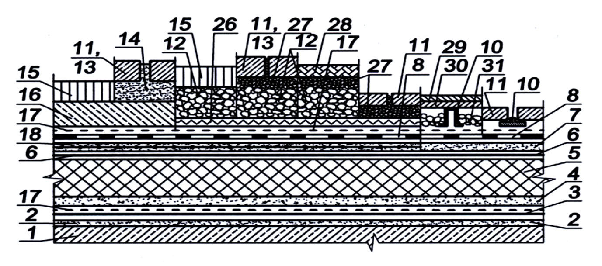
Рисунок Е .1 -Кровли утепленной крыши
Е .2 Конструктивные решения кровель неутепленной крыши приведены на рисунке Е .2.
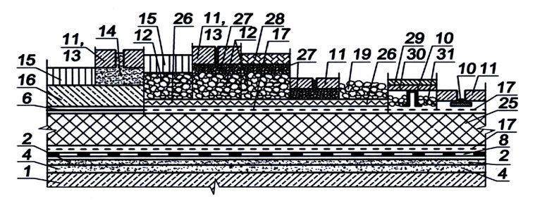
1 -контробрешетка ; 2 -обрешетка ; 3 -сплошной настил из ОСП -3 или ОСП -4 по ГОСТ Р 56309 с под -кладочным ковром ; 4 -металлический профилированный лист ( ГОСТ 24045); 5 -волнистый хризотил -цементный ( ГОСТ 30340) или цементно -волокнистый лист ; 6 -битумный волнистый лист ; 7 -металло -черепица или композитная черепица ; 8 -водозащитная пленка ; 9 -битумная плоская черепица ; 9 а -битумная волнистая черепица ; 10 -стропило ; 11 -стропило из термопрофиля из ЛСТК ; 12 -вентиля -ционный канал ; 13 -цементно -песчаная или керамическая черепица
Рисунок Е . 2 -Кровли неутепленной крыши
Таблица Ж .1
ЖПриложение Ж. Уклоны черепичной кровли
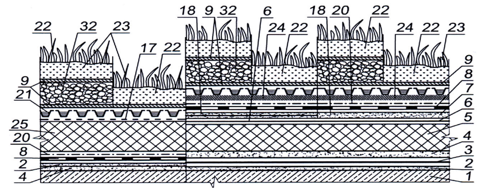
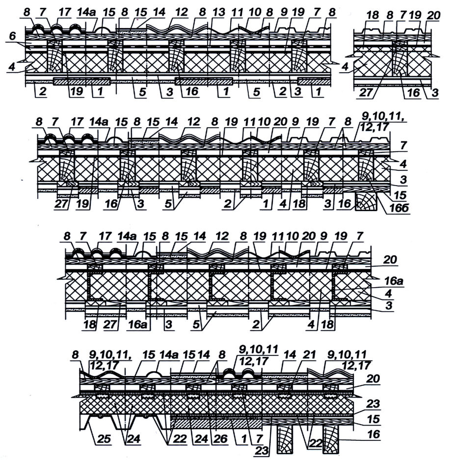
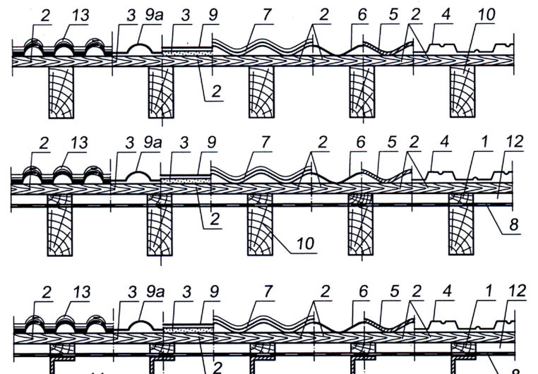
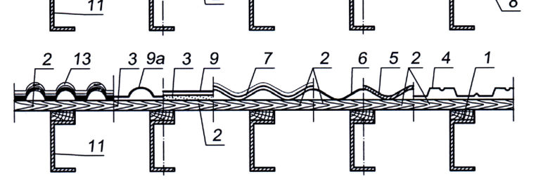
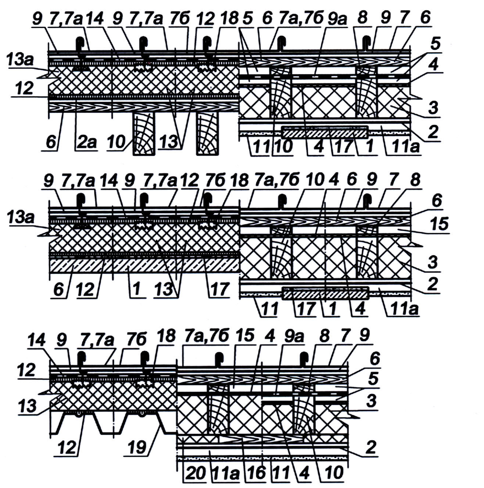
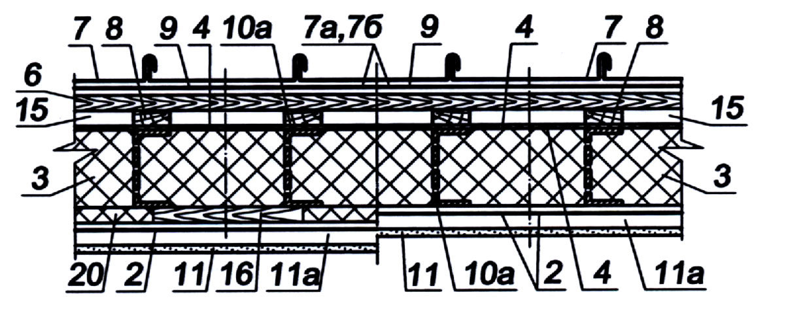
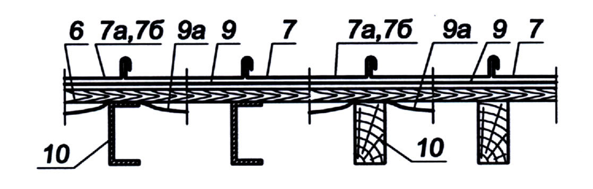
| Форма черепицы | Вид кладки | Форма | Уклон , %( град ), не менее |
|---|---|---|---|
| 1 Черепица с пазами | 1 Черепица с пазами | 1 Черепица с пазами | 1 Черепица с пазами |
| 1.1 Однопазовая цементно - песчаная черепица ( вертикальный замок ) | 1.1 Однопазовая цементно - песчаная черепица ( вертикальный замок ) | 1.1 Однопазовая цементно - песчаная черепица ( вертикальный замок ) | 1.1 Однопазовая цементно - песчаная черепица ( вертикальный замок ) |
| 1.1.1 Волновая черепица | Простая * | 40 (22) | |
| 1.1.2 Плоская черепица | Простая * | 47 (25) | |
| 1.2 Двухпазовая керамическая черепица ( вертикальный и горизонтальный замки ) | 1.2 Двухпазовая керамическая черепица ( вертикальный и горизонтальный замки ) | 1.2 Двухпазовая керамическая черепица ( вертикальный и горизонтальный замки ) | 1.2 Двухпазовая керамическая черепица ( вертикальный и горизонтальный замки ) |
| 1.2.1 Волновая черепица | Простая * | 40 (22) | |
| 1.2.2 Черепица с двумя желобками | Простая * | 47 (25) | |
| 1.2.3 Черепица с одним желобком | Простая * | 47 (25) | |
| 1.2.4 Плоская черепица | Простая * | 58 (30) | |
| 1.2.5 Пазы по диагоналям | Простая * | 29 (16) | |
| 2 Черепица без пазов | 2 Черепица без пазов | 2 Черепица без пазов | 2 Черепица без пазов |
| 2.1 Шпунтовая | Простая * | 70 (35) | |
| 2.2 Желобчатая | С нахлестом | 70 (35) | |
| 2.2 Желобчатая | Встык | 84 (40) | |
| 2.3 « Монах - монашка » | Простая * | 84 (40) | |
| 2.4 « Бобровый хвост » | Двойная кладка ** | 58 (30) | |
| 2.4 « Бобровый хвост » | Кладка « венцом »*** | 58 (30) |
ИПриложение И. Кровли из металлических листов
Конструктивные решения кровель из металлических листов приведены на рисунке И .1, а совмести -мость и физико -механические показатели металлических листов материалов для кровли -в таблицах И .1 и И .2 соответственно .
Рисунок И .1 -Конструктивные решения кровель утепленной ( а ) и неутепленной ( б ) крыши
б )
1 несущая железобетонная плита ; 2 пароизоляция ; 2 а -битумный рулонный материал , прибитый к настилу ; 3 -утеплитель ; 4 -диффузионная ветроводозащитная пленка ; 5 -двухканальный вентиляционный зазор ; 6 обрешетка или сплошной деревянный настил ; 7 кровля из медных ( ГОСТ 1173), цинковых ( ГОСТ 3640), цинк -титановых листов ; 7 а -кровля из оцинкованных стальных листов ( ГОСТ 14918); 7 б -кровля из алюминиевых ( ГОСТ 21631), свинцовых ( ГОСТ 9559) листов ; 8 контробрешетка ; 9 ОДМ ; 9 а -водозащитная пленка ; 10 стропило ; 10 а -стропило из термопрофиля из ЛСТК ; 11 обшивка из гипсокартон ; 11 а -каркас под обшивку из гипсокартона ; 12 приклейка битумом ; 13 -теплоизоляция из паронепронецаемого пеностекла ; 13 а -теплоизоляция из пенополиуретановых плит с деревянными вкладышами ; 14 рулонный битумный материал ; 15 одноканальный вентиляционный зазор ; 16 брусок толщиной , равной толщине дополнительной теплоизоляции ; 17 выравнивающая затирка из цементно -песчаного раствора ; 18 металлическая зубчатая пластина 150 × 150 мм , приклеенная битумом ; 19 настил из листового гнутого профиля ; 20 -дополнительная теплоизоляция
Рисунок И .1 , лист 2
Та б л и ц а И .1 -Совместимость металлических листовых материалов для кровли
| Наименование материала | Медь | Нержавеющая сталь | Оцинкованная сталь | Цинк - титан | Алюминий | Свинец |
|---|---|---|---|---|---|---|
| Медь | + | + | - | - | - | + |
| Нержавеющая сталь | + | + | + | + | + | + |
| Оцинкованная сталь | - | + | + | + | + | + |
| Цинк - титан | - | + | + | + | + | + |
| Алюминий | - | + | + | + | + | + |
| Свинец | + | + | + | + | + | + |
Таблица И .2 -Физико -механические показатели металлических листовых материалов для кровли
| Наименование материала | Медь | Нержавею - щая сталь | Оцинко - ван - ная сталь | Цинк - титан | Алюминий | Свинец |
|---|---|---|---|---|---|---|
| 1 Плотность , т / м³ | 8,93 | 7,7-7,9 | 7,8 | 7,2 | 2,7 | 11,34 |
| 2 Коэффициент линейного рас - ширения , мм /( м ꞏ º С ) | 0,017 | 0,011-0,016 | 0,012 | 0,022 | 0,024 | 0,029 |
| 3 Временное c опротивление растяжению , МПа | 200-260 | 530-700 | 255-490 | 120-140 | 80-120 | 18 |
| 4 Относитель - ное удлинение , % | 50-60 | 45-50 | 21-26 | 30 | 30-40 | 65 |
Библиография
- [1] Федеральный закон от 30 декабря 2009 г . № 384ФЗ « Технический регламент о безопас -ности зданий и сооружений »
- [2] Федеральный закон от 22 июля 2008 г . № 123ФЗ « Технический регламент о требованиях пожарной безопасности »
- [3] Федеральный закон от 23 ноября 2009 г . № 261ФЗ « Об энергосбережении и о повы -шении энергетической эффективности и о внесении изменений в отдельные законодательные акты Российской Федерации »
- [4] СП 23-101-2004 Проектирование тепловой защиты зданий
- [5] СО 153-34.21.122-2003 Инструкция по устройству молниезащиты зданий , сооружений и промышленных коммуникаций
- [6] Рекомендации по проектированию озеленения и благоустройства крыш жилых и обще -ственных зданий и других искусственных оснований . -М : ГУП « НИАЦ », 2000. - 65 с .